Chapter 23: The Digestive System¶
Introduction¶
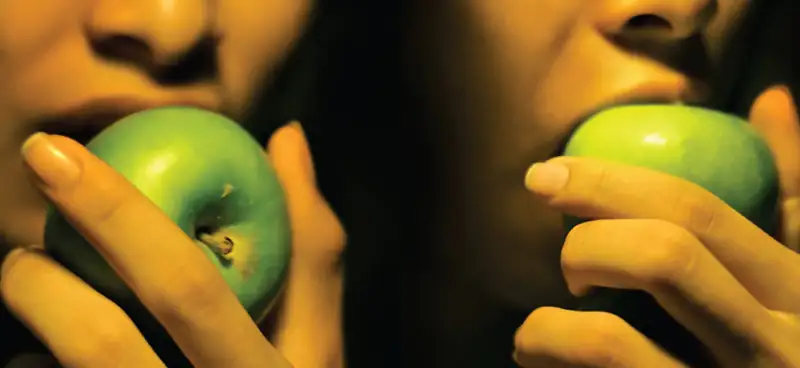
Chapter Outline: Chapter Objectives
After studying this chapter, you will be able to:
- List and describe the functional anatomy of the organs and accessory organs of the digestive system
- Discuss the processes and control of ingestion, propulsion, mechanical digestion, chemical digestion, absorption, and defecation
- Discuss the roles of the liver, pancreas, and gallbladder in digestion
- Compare and contrast the digestion of the three macronutrients
The digestive system is continually at work, yet people seldom appreciate the complex tasks it performs in a choreographed biologic symphony. Consider what happens when you eat an apple. Of course, you enjoy the apple’s taste as you chew it, but in the hours that follow, unless something goes amiss and you get a stomachache, you don’t notice that your digestive system is working. You may be taking a walk or studying or sleeping, having forgotten all about the apple, but your stomach and intestines are busy digesting it and absorbing its vitamins and other nutrients. By the time any waste material is excreted, the body has appropriated all it can use from the apple. In short, whether you pay attention or not, the organs of the digestive system perform their specific functions, allowing you to use the food you eat to keep you going. This chapter examines the structure and functions of these organs, and explores the mechanics and chemistry of the digestive processes.
23.1 Overview of the Digestive System¶
Learning Objectives
By the end of this section, you will be able to:
- Identify the organs of the alimentary canal from proximal to distal, and briefly state their function
- Identify the accessory digestive organs and briefly state their function
- Describe the four fundamental tissue layers of the alimentary canal
- Contrast the contributions of the enteric and autonomic nervous systems to digestive system functioning
- Explain how the peritoneum anchors the digestive organs
The function of the digestive system is to break down the foods you eat, release their nutrients, and absorb those nutrients into the body. Although the small intestine is the workhorse of the system, where the majority of digestion occurs, and where most of the released nutrients are absorbed into the blood or lymph, each of the digestive system organs makes a vital contribution to this process (Figure 23.2).
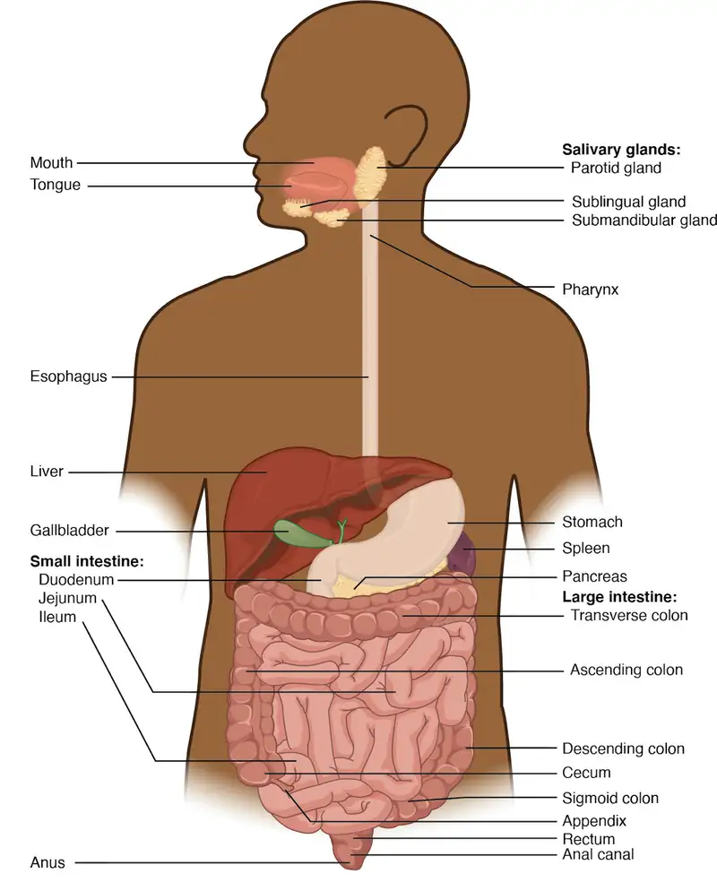
As is the case with all body systems, the digestive system does not work in isolation; it functions cooperatively with the other systems of the body. Consider for example, the interrelationship between the digestive and cardiovascular systems. Arteries supply the digestive organs with oxygen and processed nutrients, and veins drain the digestive tract. These intestinal veins, constituting the hepatic portal system, are unique; they do not return blood directly to the heart. Rather, this blood is diverted to the liver where its nutrients are off-loaded for processing before blood completes its circuit back to the heart. At the same time, the digestive system provides nutrients to the heart muscle and vascular tissue to support their functioning. The interrelationship of the digestive and endocrine systems is also critical. Hormones secreted by several endocrine glands, as well as endocrine cells of the pancreas, the stomach, and the small intestine, contribute to the control of digestion and nutrient metabolism. In turn, the digestive system provides the nutrients to fuel endocrine function. Table 23.1 gives a quick glimpse at how these other systems contribute to the functioning of the digestive system.
Table 23.1
| Contribution of Other Body Systems to the Digestive System | |
|---|---|
| Body system | Benefits received by the digestive system |
| Cardiovascular | Blood supplies digestive organs with oxygen and processed nutrients |
| Endocrine | Endocrine hormones help regulate secretion in digestive glands and accessory organs |
| Integumentary | Skin helps protect digestive organs and synthesizes vitamin D for calcium absorption |
| Lymphatic | Mucosa-associated lymphoid tissue and other lymphatic tissue defend against entry of pathogens; lacteals absorb lipids; and lymphatic vessels transport lipids to bloodstream |
| Muscular | Skeletal muscles support and protect abdominal organs |
| Nervous | Sensory and motor neurons help regulate secretions and muscle contractions in the digestive tract |
| Respiratory | Respiratory organs provide oxygen and remove carbon dioxide |
| Skeletal | Bones help protect and support digestive organs |
| Urinary | Kidneys convert vitamin D into its active form, allowing calcium absorption in the small intestine |
Digestive System Organs¶
The easiest way to understand the digestive system is to divide its organs into two main categories. The first group is the organs that make up the alimentary canal. Accessory digestive organs comprise the second group and are critical for orchestrating the breakdown of food and the assimilation of its nutrients into the body. Accessory digestive organs, despite their name, are critical to the function of the digestive system.
Alimentary Canal Organs¶
Also called the gastrointestinal (GI) tract or gut, the alimentary canal (aliment- = “to nourish”) is a one-way tube about 7.62 meters (25 feet) in length during life and closer to 10.67 meters (35 feet) in length when measured after death, once smooth muscle tone is lost. The main function of the organs of the alimentary canal is to nourish the body. This tube begins at the mouth and terminates at the anus. Between those two points, the canal is modified as the pharynx, esophagus, stomach, and small and large intestines to fit the functional needs of the body. Both the mouth and anus are open to the external environment; thus, food and wastes within the alimentary canal are technically considered to be outside the body. Only through the process of absorption do the nutrients in food enter into and nourish the body’s “inner space.”
Accessory Structures¶
Each accessory digestive organ aids in the breakdown of food (Figure 23.3). Within the mouth, the teeth and tongue begin mechanical digestion, whereas the salivary glands begin chemical digestion. Once food products enter the small intestine, the gallbladder, liver, and pancreas release secretions—such as bile and enzymes—essential for digestion to continue. Together, these are called accessory organs because they sprout from the lining cells of the developing gut (mucosa) and augment its function; indeed, you could not live without their vital contributions, and many significant diseases result from their malfunction. Even after development is complete, they maintain a connection to the gut by way of ducts.
Histology of the Alimentary Canal¶
Throughout its length, the alimentary tract is composed of the same four tissue layers; the details of their structural arrangements vary to fit their specific functions. Starting from the lumen and moving outwards, these layers are the mucosa, submucosa, muscularis, and serosa, which is continuous with the mesentery (see Figure 23.3).
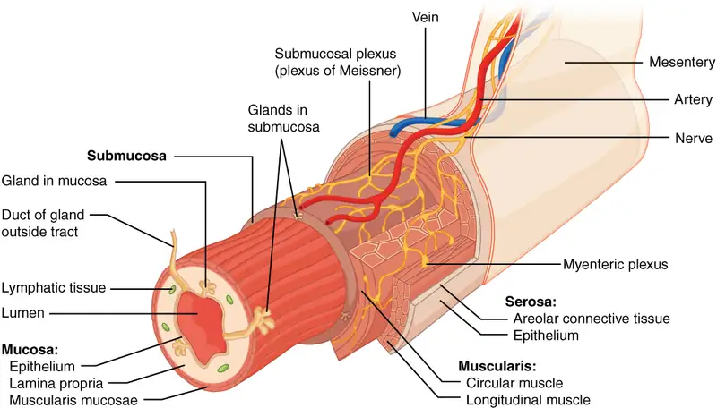
The mucosa is referred to as a mucous membrane, because mucus production is a characteristic feature of gut epithelium. The membrane consists of epithelium, which is in direct contact with ingested food, and the lamina propria, a layer of connective tissue analogous to the dermis. In addition, the mucosa has a thin, smooth muscle layer, called the muscularis mucosae (not to be confused with the muscularis layer, described below).
Epithelium—In the mouth, pharynx, esophagus, and anal canal, the epithelium is primarily a non-keratinized, stratified squamous epithelium. In the stomach and intestines, it is a simple columnar epithelium. Notice that the epithelium is in direct contact with the lumen, the space inside the alimentary canal. Interspersed among its epithelial cells are goblet cells, which secrete mucus and fluid into the lumen, and enteroendocrine cells, which secrete hormones into the interstitial spaces between cells. Epithelial cells have a very brief lifespan, averaging from only a couple of days (in the mouth) to about a week (in the gut). This process of rapid renewal helps preserve the health of the alimentary canal, despite the wear and tear resulting from continued contact with foodstuffs.
Lamina propria—In addition to loose connective tissue, the lamina propria contains numerous blood and lymphatic vessels that transport nutrients absorbed through the alimentary canal to other parts of the body. The lamina propria also serves an immune function by housing clusters of lymphocytes, making up the mucosa-associated lymphoid tissue (MALT). These lymphocyte clusters are particularly substantial in the distal ileum where they are known as Peyer’s patches. When you consider that the alimentary canal is exposed to foodborne bacteria and other foreign matter, it is not hard to appreciate why the immune system has evolved a means of defending against the pathogens encountered within it.
Muscularis mucosae—This thin layer of smooth muscle is in a constant state of tension, pulling the mucosa of the stomach and small intestine into undulating folds. These folds dramatically increase the surface area available for digestion and absorption.
As its name implies, the submucosa lies immediately beneath the mucosa. A broad layer of dense connective tissue, it connects the overlying mucosa to the underlying muscularis. It includes blood and lymphatic vessels (which transport absorbed nutrients), and a scattering of submucosal glands that release digestive secretions. Additionally, it serves as a conduit for a dense branching network of nerves, the submucosal plexus, which functions as described below.
The third layer of the alimentary canal is the muscularis (also called the muscularis externa). The muscularis in the small intestine is made up of a double layer of smooth muscle: an inner circular layer and an outer longitudinal layer. The contractions of these layers promote mechanical digestion, expose more of the food to digestive chemicals, and move the food along the canal. In the most proximal and distal regions of the alimentary canal, including the mouth, pharynx, anterior part of the esophagus, and external anal sphincter, the muscularis is made up of skeletal muscle, which gives you voluntary control over swallowing and defecation. The basic two-layer structure found in the small intestine is modified in the organs proximal and distal to it. The stomach is equipped for its churning function by the addition of a third layer, the oblique muscle. While the colon has two layers like the small intestine, its longitudinal layer is segregated into three narrow parallel bands, the tenia coli, which make it look like a series of pouches rather than a simple tube.
The serosa is the portion of the alimentary canal superficial to the muscularis. Present only in the region of the alimentary canal within the abdominal cavity, it consists of a layer of visceral peritoneum overlying a layer of loose connective tissue. Instead of serosa, the mouth, pharynx, and esophagus have a dense sheath of collagen fibers called the adventitia. These tissues serve to hold the alimentary canal in place near the ventral surface of the vertebral column.
Nerve Supply¶
As soon as food enters the mouth, it is detected by receptors that send impulses along the sensory neurons of cranial nerves. Without these nerves, not only would your food be without taste, but you would also be unable to feel either the food or the structures of your mouth, and you would be unable to avoid biting yourself as you chew, an action enabled by the motor branches of cranial nerves.
Intrinsic innervation of much of the alimentary canal is provided by the enteric nervous system, which runs from the esophagus to the anus, and contains approximately 100 million motor, sensory, and interneurons (unique to this system compared to all other parts of the peripheral nervous system). These enteric neurons are grouped into two plexuses. The myenteric plexus (plexus of Auerbach) lies in the muscularis layer of the alimentary canal and is responsible for motility, especially the rhythm and force of the contractions of the muscularis. The submucosal plexus (plexus of Meissner) lies in the submucosal layer and is responsible for regulating digestive secretions and reacting to the presence of food (see Figure 23.3).
Extrinsic innervations of the alimentary canal are provided by the autonomic nervous system, which includes both sympathetic and parasympathetic nerves. In general, sympathetic activation (the fight-or-flight response) restricts the activity of enteric neurons, thereby decreasing GI secretion and motility. In contrast, parasympathetic activation (the rest-and-digest response) increases GI secretion and motility by stimulating neurons of the enteric nervous system.
Blood Supply¶
The blood vessels serving the digestive system have two functions. They transport the protein and carbohydrate nutrients absorbed by mucosal cells after food is digested in the lumen. Lipids are absorbed via lacteals, tiny structures of the lymphatic system. The blood vessels’ second function is to supply the organs of the alimentary canal with the nutrients and oxygen needed to drive their cellular processes.
Specifically, the more anterior parts of the alimentary canal are supplied with blood by arteries branching off the aortic arch and thoracic aorta. Below this point, the alimentary canal is supplied with blood by arteries branching from the abdominal aorta. The celiac trunk services the liver, stomach, and duodenum, whereas the superior and inferior mesenteric arteries supply blood to the remaining small and large intestines.
The veins that collect nutrient-rich blood from the small intestine (where most absorption occurs) empty into the hepatic portal system. This venous network takes the blood into the liver where the nutrients are either processed or stored for later use. Only then does the blood drained from the alimentary canal viscera circulate back to the heart. To appreciate just how demanding the digestive process is on the cardiovascular system, consider that while you are “resting and digesting,” about one-fourth of the blood pumped with each heartbeat enters arteries serving the intestines.
The Peritoneum¶
The digestive organs within the abdominal cavity are held in place by the peritoneum, a broad serous membranous sac made up of squamous epithelial tissue surrounded by connective tissue. It is composed of two different regions: the parietal peritoneum, which lines the abdominal wall, and the visceral peritoneum, which envelopes the abdominal organs (Figure 23.4). The peritoneal cavity is the space bounded by the visceral and parietal peritoneal surfaces. A few milliliters of watery fluid act as a lubricant to minimize friction between the serosal surfaces of the peritoneum.
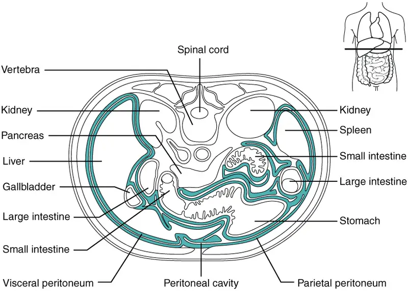
Disorders of the Digestive System: Peritonitis
Inflammation of the peritoneum is called peritonitis. Chemical peritonitis can develop any time the wall of the alimentary canal is breached, allowing the contents of the lumen entry into the peritoneal cavity. For example, when an ulcer perforates the stomach wall, gastric juices spill into the peritoneal cavity. Hemorrhagic peritonitis occurs after a ruptured tubal pregnancy or traumatic injury to the liver or spleen fills the peritoneal cavity with blood. Even more severe peritonitis is associated with bacterial infections seen with appendicitis, colonic diverticulitis, and pelvic inflammatory disease (infection of uterine tubes, usually by sexually transmitted bacteria). Peritonitis is life threatening and often results in emergency surgery to correct the underlying problem and intensive antibiotic therapy. When your great grandparents and even your parents were young, the mortality from peritonitis was high. Aggressive surgery, improvements in anesthesia safety, the advance of critical care expertise, and antibiotics have greatly improved the mortality rate from this condition. Even so, the mortality rate still ranges from 30 to 40 percent.
The visceral peritoneum includes multiple large folds that envelope various abdominal organs, holding them to the dorsal surface of the body wall. Within these folds are blood vessels, lymphatic vessels, and nerves that innervate the organs with which they are in contact, supplying their adjacent organs. The five major peritoneal folds are described in Table 23.2. Note that during fetal development, certain digestive structures, including the first portion of the small intestine (called the duodenum), the pancreas, and portions of the large intestine (the ascending and descending colon, and the rectum) remain completely or partially posterior to the peritoneum. Thus, the location of these organs is described as retroperitoneal.
Table 23.2
| The Five Major Peritoneal Folds | |
|---|---|
| Fold | Description |
| Greater omentum | Apron-like structure that lies superficial to the small intestine and transverse colon; a site of fat deposition in people who are overweight |
| Falciform ligament | Anchors the liver to the anterior abdominal wall and inferior border of the diaphragm |
| Lesser omentum | Suspends the stomach from the inferior border of the liver; provides a pathway for structures connecting to the liver |
| Mesentery | Vertical band of tissue anterior to the lumbar vertebrae and anchoring all of the small intestine except the initial portion (the duodenum) |
| Mesocolon | Attaches two portions of the large intestine (the transverse and sigmoid colon) to the posterior abdominal wall |
Interactive
By clicking on this link you can watch a short video of what happens to the food you eat, as it passes from your mouth to your intestine. Along the way, note how the food changes consistency and form. How does this change in consistency facilitate your gaining nutrients from food?
23.2 Digestive System Processes and Regulation¶
Learning Objectives
By the end of this section, you will be able to:
- Discuss six fundamental activities of the digestive system, giving an example of each
- Compare and contrast the neural and hormonal controls involved in digestion
The digestive system uses mechanical and chemical activities to break food down into absorbable substances during its journey through the digestive system. Table 23.3 provides an overview of the basic functions of the digestive organs.
Interactive
Visit this site for an overview of digestion of food in different regions of the digestive tract. Note the route of non-fat nutrients from the small intestine to their release as nutrients to the body.
Table 23.3
| Functions of the Digestive Organs | ||
|---|---|---|
| Organ | Major functions | Other functions |
| Mouth | • Ingests food • Chews and mixes food • Begins chemical breakdown of carbohydrates • Moves food into the pharynx • Begins breakdown of lipids via lingual lipase |
• Moistens and dissolves food, allowing you to taste it • Cleans and lubricates the teeth and oral cavity • Has some antimicrobial activity |
| Pharynx | • Propels food from the oral cavity to the esophagus | • Lubricates food and passageways |
| Esophagus | • Propels food to the stomach | • Lubricates food and passageways |
| Stomach | • Mixes and churns food with gastric juices to form chyme • Begins chemical breakdown of proteins • Releases food into the duodenum as chyme • Absorbs some fat-soluble substances (for example, alcohol, aspirin) • Possesses antimicrobial functions |
• Stimulates protein-digesting enzymes • Secretes intrinsic factor required for vitamin B12 absorption in small intestine |
| Small intestine | • Mixes chyme with digestive juices • Propels food at a rate slow enough for digestion and absorption • Absorbs breakdown products of carbohydrates, proteins, lipids, and nucleic acids, along with vitamins, minerals, and water • Performs physical digestion via segmentation |
• Provides optimal medium for enzymatic activity |
| Accessory organs | • Liver: produces bile salts, which emulsify lipids, aiding their digestion and absorption • Gallbladder: stores, concentrates, and releases bile • Pancreas: produces digestive enzymes and bicarbonate |
• Bicarbonate-rich pancreatic juices help neutralize acidic chyme and provide optimal environment for enzymatic activity |
| Large intestine | • Further breaks down food residues • Absorbs most residual water, electrolytes, and vitamins produced by enteric bacteria • Propels feces toward rectum • Eliminates feces |
• Food residue is concentrated and temporarily stored prior to defecation • Mucus eases passage of feces through colon |
Digestive Processes¶
The processes of digestion include six activities: ingestion, propulsion, mechanical or physical digestion, chemical digestion, absorption, and defecation.
The first of these processes, ingestion, refers to the entry of food into the alimentary canal through the mouth. There, the food is chewed and mixed with saliva, which contains enzymes that begin breaking down the carbohydrates in the food plus some lipid digestion via lingual lipase. Chewing increases the surface area of the food and allows an appropriately sized bolus to be produced.
Food leaves the mouth when the tongue and pharyngeal muscles propel it into the esophagus. This act of swallowing, the last voluntary act until defecation, is an example of propulsion, which refers to the movement of food through the digestive tract. It includes both the voluntary process of swallowing and the involuntary process of peristalsis. Peristalsis consists of sequential, alternating waves of contraction and relaxation of alimentary wall smooth muscles, which act to propel food along (Figure 23.5). These waves also play a role in mixing food with digestive juices. Peristalsis is so powerful that foods and liquids you swallow enter your stomach even if you are standing on your head.
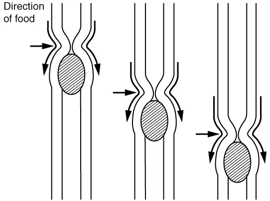
Digestion includes both mechanical and chemical processes. Mechanical digestion is a purely physical process that does not change the chemical nature of the food. Instead, it makes the food smaller to increase both surface area and mobility. It includes mastication, or chewing, as well as tongue movements that help break food into smaller bits and mix food with saliva. Although there may be a tendency to think that mechanical digestion is limited to the first steps of the digestive process, it occurs after the food leaves the mouth, as well. The mechanical churning of food in the stomach serves to further break it apart and expose more of its surface area to digestive juices, creating an acidic “soup” called chyme. Segmentation, which occurs mainly in the small intestine, consists of localized contractions of circular muscle of the muscularis layer of the alimentary canal. These contractions isolate small sections of the intestine, moving their contents back and forth while continuously subdividing, breaking up, and mixing the contents. By moving food back and forth in the intestinal lumen, segmentation mixes food with digestive juices and facilitates absorption.
In chemical digestion, starting in the mouth, digestive secretions break down complex food molecules into their chemical building blocks (for example, proteins into separate amino acids). These secretions vary in composition, but typically contain water, various enzymes, acids, and salts. The process is completed in the small intestine.
Food that has been broken down is of no value to the body unless it enters the bloodstream and its nutrients are put to work. This occurs through the process of absorption, which takes place primarily within the small intestine. There, most nutrients are absorbed from the lumen of the alimentary canal into the bloodstream through the epithelial cells that make up the mucosa. Lipids are absorbed into lacteals and are transported via the lymphatic vessels to the bloodstream (the subclavian veins near the heart). The details of these processes will be discussed later.
In defecation, the final step in digestion, undigested materials are removed from the body as feces.
Aging and the Digestive System: From Appetite Suppression to Constipation
Age-related changes in the digestive system begin in the mouth and can affect virtually every aspect of the digestive system. Taste buds become less sensitive, so food isn’t as appetizing as it once was. A slice of pizza is a challenge, not a treat, when you have lost teeth, your gums are diseased, and your salivary glands aren’t producing enough saliva. Swallowing can be difficult, and ingested food moves slowly through the alimentary canal because of reduced strength and tone of muscular tissue. Neurosensory feedback is also dampened, slowing the transmission of messages that stimulate the release of enzymes and hormones.
Pathologies that affect the digestive organs—such as hiatal hernia, gastritis, and peptic ulcer disease—can occur at greater frequencies as you age. Problems in the small intestine may include duodenal ulcers, maldigestion, and malabsorption. Problems in the large intestine include hemorrhoids, diverticular disease, and constipation. Conditions that affect the function of accessory organs—and their abilities to deliver pancreatic enzymes and bile to the small intestine—include jaundice, acute pancreatitis, cirrhosis, and gallstones.
In some cases, a single organ is in charge of a digestive process. For example, ingestion occurs only in the mouth and defecation only in the anus. However, most digestive processes involve the interaction of several organs and occur gradually as food moves through the alimentary canal (Figure 23.6).
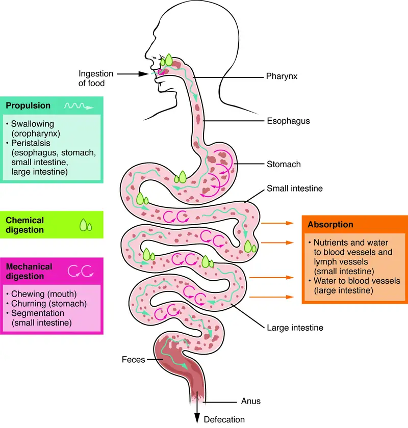
Some chemical digestion occurs in the mouth. Some absorption can occur in the mouth and stomach, for example, alcohol and aspirin.
Regulatory Mechanisms¶
Neural and endocrine regulatory mechanisms work to maintain the optimal conditions in the lumen needed for digestion and absorption. These regulatory mechanisms, which stimulate digestive activity through mechanical and chemical activity, are controlled both extrinsically and intrinsically.
Neural Controls¶
The walls of the alimentary canal contain a variety of sensors that help regulate digestive functions. These include mechanoreceptors, chemoreceptors, and osmoreceptors, which are capable of detecting mechanical, chemical, and osmotic stimuli, respectively. For example, these receptors can sense when the presence of food has caused the stomach to expand, whether food particles have been sufficiently broken down, how much liquid is present, and the type of nutrients in the food (lipids, carbohydrates, and/or proteins). Stimulation of these receptors provokes an appropriate reflex that furthers the process of digestion. This may entail sending a message that activates the glands that secrete digestive juices into the lumen, or it may mean the stimulation of muscles within the alimentary canal, thereby activating peristalsis and segmentation that move food along the intestinal tract.
The walls of the entire alimentary canal are embedded with nerve plexuses that interact with the central nervous system and other nerve plexuses—either within the same digestive organ or in different ones. These interactions prompt several types of reflexes. Extrinsic nerve plexuses orchestrate long reflexes, which involve the central and autonomic nervous systems and work in response to stimuli from outside the digestive system. Short reflexes, on the other hand, are orchestrated by intrinsic nerve plexuses within the alimentary canal wall. These two plexuses and their connections were introduced earlier as the enteric nervous system. Short reflexes regulate activities in one area of the digestive tract and may coordinate local peristaltic movements and stimulate digestive secretions. For example, the sight, smell, and taste of food initiate long reflexes that begin with a sensory neuron delivering a signal to the medulla oblongata. The response to the signal is to stimulate cells in the stomach to begin secreting digestive juices in preparation for incoming food. In contrast, food that distends the stomach initiates short reflexes that cause cells in the stomach wall to increase their secretion of digestive juices.
Hormonal Controls¶
A variety of hormones are involved in the digestive process. The main digestive hormone of the stomach is gastrin, which is secreted in response to the presence of food. Gastrin stimulates the secretion of gastric acid by the parietal cells of the stomach mucosa. Other GI hormones are produced and act upon the gut and its accessory organs. Hormones produced by the duodenum include secretin, which stimulates a watery secretion of bicarbonate by the pancreas; cholecystokinin (CCK), which stimulates the secretion of pancreatic enzymes and bile from the liver and release of bile from the gallbladder; and gastric inhibitory peptide, which inhibits gastric secretion and slows gastric emptying and motility. These GI hormones are secreted by specialized epithelial cells, called endocrinocytes, located in the mucosal epithelium of the stomach and small intestine. These hormones then enter the bloodstream, through which they can reach their target organs.
23.3 The Mouth, Pharynx, and Esophagus¶
Learning Objectives
By the end of this section, you will be able to:
- Describe the structures of the mouth, including its three accessory digestive organs
- Group the 32 adult teeth according to name, location, and function
- Describe the process of swallowing, including the roles of the tongue, upper esophageal sphincter, and epiglottis
- Trace the pathway food follows from ingestion into the mouth through release into the stomach
In this section, you will examine the anatomy and functions of the three main organs of the upper alimentary canal—the mouth, pharynx, and esophagus—as well as three associated accessory organs—the tongue, salivary glands, and teeth.
The Mouth¶
The cheeks, tongue, and palate frame the mouth, which is also called the oral cavity (or buccal cavity). The structures of the mouth are illustrated in Figure 23.7.
At the entrance to the mouth are the lips, or labia (singular = labium). Their outer covering is skin, which transitions to a mucous membrane in the mouth proper. Lips are very vascular with a thin layer of keratin; hence, the reason they are "red." They have a huge representation on the cerebral cortex, which probably explains the human fascination with kissing! The lips cover the orbicularis oris muscle, which regulates what comes in and goes out of the mouth. The labial frenulum is a midline fold of mucous membrane that attaches the inner surface of each lip to the gum. The cheeks make up the oral cavity’s sidewalls. While their outer covering is skin, their inner covering is mucous membrane. This membrane is made up of non-keratinized, stratified squamous epithelium. Between the skin and mucous membranes are connective tissue and buccinator muscles. The next time you eat some food, notice how the buccinator muscles in your cheeks and the orbicularis oris muscle in your lips contract, helping you keep the food from falling out of your mouth. Additionally, notice how these muscles work when you are speaking.
The pocket-like part of the mouth that is framed on the inside by the gums and teeth, and on the outside by the cheeks and lips is called the oral vestibule. Moving farther into the mouth, the opening between the oral cavity and throat (oropharynx) is called the fauces (like the kitchen "faucet"). The main open area of the mouth, or oral cavity proper, runs from the gums and teeth to the fauces.
When you are chewing, you do not find it difficult to breathe simultaneously. The next time you have food in your mouth, notice how the arched shape of the roof of your mouth allows you to handle both digestion and respiration at the same time. This arch is called the palate. The anterior region of the palate serves as a wall (or septum) between the oral and nasal cavities as well as a rigid shelf against which the tongue can push food. It is created by the maxillary and palatine bones of the skull and, given its bony structure, is known as the hard palate. If you run your tongue along the roof of your mouth, you’ll notice that the hard palate ends in the posterior oral cavity, and the tissue becomes fleshier. This part of the palate, known as the soft palate, is composed mainly of skeletal muscle. You can therefore manipulate, subconsciously, the soft palate—for instance, to yawn, swallow, or sing (see Figure 23.7).
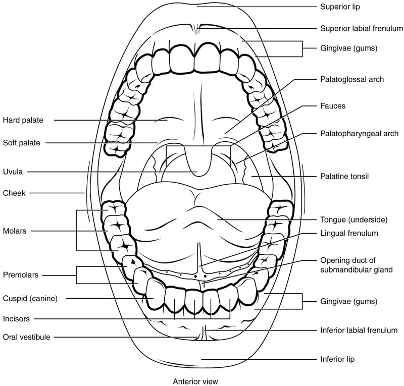
A fleshy bead of tissue called the uvula drops down from the center of the posterior edge of the soft palate. Although some have suggested that the uvula is a vestigial organ, it serves an important purpose. When you swallow, the soft palate and uvula move upward, helping to keep foods and liquid from entering the nasal cavity. Unfortunately, it can also contribute to the sound produced by snoring. Two muscular folds extend downward from the soft palate, on either side of the uvula. Toward the front, the palatoglossal arch lies next to the base of the tongue; behind it, the palatopharyngeal arch forms the superior and lateral margins of the fauces. Between these two arches are the palatine tonsils, clusters of lymphoid tissue that protect the pharynx. The lingual tonsils are located at the base of the tongue.
The Tongue¶
Perhaps you have heard it said that the tongue is the strongest muscle in the body. Those who stake this claim cite its strength proportionate to its size. Although it is difficult to quantify the relative strength of different muscles, it remains indisputable that the tongue is a workhorse, facilitating ingestion, mechanical digestion, chemical digestion (lingual lipase), sensation (of taste, texture, and temperature of food), swallowing, and vocalization.
The tongue is attached to the mandible, the styloid processes of the temporal bones, and the hyoid bone. The hyoid is unique in that it only distantly/indirectly articulates with other bones. The tongue is positioned over the floor of the oral cavity. A medial septum extends the entire length of the tongue, dividing it into symmetrical halves.
Beneath its mucous membrane covering, each half of the tongue is composed of the same number and type of intrinsic and extrinsic skeletal muscles. The intrinsic muscles (those within the tongue) are the longitudinalis inferior, longitudinalis superior, transversus linguae, and verticalis linguae muscles. These allow you to change the size and shape of your tongue, as well as to stick it out, if you wish. Having such a flexible tongue facilitates both swallowing and speech.
As you learned in your study of the muscular system, the extrinsic muscles of the tongue are the palatoglossus, hyoglossus, styloglossus, and genioglossus muscles. These muscles originate outside the tongue and insert into connective tissues within the tongue. The mylohyoid is responsible for raising the tongue, the hyoglossus pulls it down and back, the styloglossus pulls it up and back, and the genioglossus pulls it forward. Working in concert, these muscles perform three important digestive functions in the mouth: (1) position food for optimal chewing, (2) gather food into a bolus (rounded mass), and (3) position food so it can be swallowed.
The top and sides of the tongue are studded with papillae, extensions of lamina propria of the mucosa, which are covered in stratified squamous epithelium (Figure 23.8). Fungiform papillae, which are mushroom shaped, cover a large area of the tongue; they tend to be larger toward the rear of the tongue and smaller on the tip and sides. In contrast, filiform papillae are long and thin. Fungiform papillae contain taste buds, and filiform papillae have touch receptors that help the tongue move food around in the mouth. The filiform papillae create an abrasive surface that performs mechanically, much like a cat’s rough tongue that is used for grooming. Lingual glands in the lamina propria of the tongue secrete mucus and a watery serous fluid that contains the enzyme lingual lipase, which plays a minor role in breaking down triglycerides but does not begin working until it is activated in the stomach. A fold of mucous membrane on the underside of the tongue, the lingual frenulum, tethers the tongue to the floor of the mouth. People with the congenital anomaly ankyloglossia, also known by the non-medical term “tongue tie,” have a lingual frenulum that is too short or otherwise malformed. Severe ankyloglossia can impair speech and must be corrected with surgery.
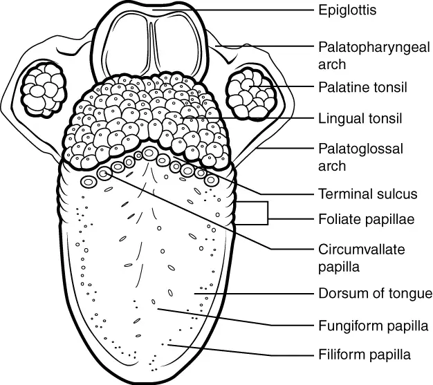
The Salivary Glands¶
Many small salivary glands are housed within the mucous membranes of the mouth and tongue. These minor exocrine glands are constantly secreting saliva, either directly into the oral cavity or indirectly through ducts, even while you sleep. In fact, an average of 1 to 1.5 liters of saliva is secreted each day. Usually just enough saliva is present to moisten the mouth and teeth. Secretion increases when you eat, because saliva is essential to moisten food and initiate the chemical breakdown of carbohydrates. Small amounts of saliva are also secreted by the labial glands in the lips. In addition, the buccal glands in the cheeks, palatal glands in the palate, and lingual glands in the tongue help ensure that all areas of the mouth are supplied with adequate saliva.
The Major Salivary Glands¶
Outside the oral mucosa are three pairs of major salivary glands, which secrete the majority of saliva into ducts that open into the mouth:
- The submandibular glands, which are in the floor of the mouth, secrete saliva into the mouth through the submandibular ducts.
- The sublingual glands, which lie below the tongue, use the lesser sublingual ducts to secrete saliva into the oral cavity.
- The parotid glands lie between the skin and the masseter muscle, near the ears. They secrete saliva into the mouth through the parotid duct, which is located near the second upper molar tooth (Figure 23.9).
Saliva¶
Saliva is essentially (99.4 percent) water. The remaining 0.6 percent is a complex mixture of ions, glycoproteins, enzymes, growth factors, and waste products. Perhaps the most important ingredient in saliva from the perspective of digestion is the enzyme salivary amylase, which initiates the breakdown of carbohydrates. Food does not spend enough time in the mouth to allow all the carbohydrates to break down, but salivary amylase continues acting until it is inactivated by stomach acids. Bicarbonate and phosphate ions function as chemical buffers, maintaining saliva at a pH between 6.35 and 6.85. Salivary mucus helps lubricate food, facilitating movement in the mouth, bolus formation, and swallowing. Saliva contains immunoglobulin A, which prevents microbes from penetrating the epithelium, and lysozyme, which makes saliva antimicrobial. Saliva also contains epidermal growth factor, which might have given rise to the adage “a mother’s kiss can heal a wound.”
Each of the major salivary glands secretes a unique formulation of saliva according to its cellular makeup. For example, the parotid glands secrete a watery solution that contains salivary amylase. The submandibular glands have cells similar to those of the parotid glands, as well as mucus-secreting cells. Therefore, saliva secreted by the submandibular glands also contains amylase but in a liquid thickened with mucus. The sublingual glands contain mostly mucous cells, and they secrete the thickest saliva with the least amount of salivary amylase.
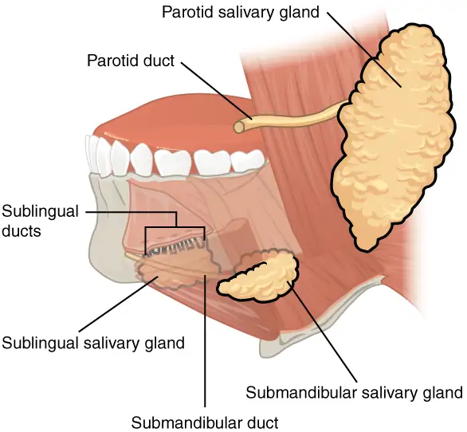
Homeostatic Imbalances: The Parotid Glands: Mumps
Infections of the nasal passages and pharynx can attack any salivary gland. The parotid glands are the usual site of infection with the virus that causes mumps (paramyxovirus). Mumps manifests by enlargement and inflammation of the parotid glands, causing a characteristic swelling between the ears and the jaw. Symptoms include fever and throat pain, which can be severe when swallowing acidic substances such as orange juice.
In about one-third of males who are past puberty, mumps also causes testicular inflammation, typically affecting only one testis and rarely resulting in sterility. With the increasing use and effectiveness of mumps vaccines, the incidence of mumps has decreased dramatically. According to the U.S. Centers for Disease Control and Prevention (CDC), the number of mumps cases dropped from more than 150,000 in 1968 to fewer than 1700 in 1993 to only 11 reported cases in 2011.
Regulation of Salivation¶
The autonomic nervous system regulates salivation (the secretion of saliva). In the absence of food, parasympathetic stimulation keeps saliva flowing at just the right level for comfort as you speak, swallow, sleep, and generally go about life. Over-salivation can occur, for example, if you are stimulated by the smell of food, but that food is not available for you to eat. Drooling is an extreme instance of the overproduction of saliva. During times of stress, such as before speaking in public, sympathetic stimulation takes over, reducing salivation and producing the symptom of dry mouth often associated with anxiety. When you are dehydrated, salivation is reduced, causing the mouth to feel dry and prompting you to take action to quench your thirst.
Salivation can be stimulated by the sight, smell, and taste of food. It can even be stimulated by thinking about food. You might notice whether reading about food and salivation right now has had any effect on your production of saliva.
How does the salivation process work while you are eating? Food contains chemicals that stimulate taste receptors on the tongue, which send impulses to the superior and inferior salivatory nuclei in the brain stem. These two nuclei then send back parasympathetic impulses through fibers in the glossopharyngeal and facial nerves, which stimulate salivation. Even after you swallow food, salivation is increased to cleanse the mouth and to water down and neutralize any irritating chemical remnants, such as that hot sauce in your burrito. Most saliva is swallowed along with food and is reabsorbed, so that fluid is not lost.
The Teeth¶
The teeth, or dentes (singular = dens), are organs similar to bones that you use to tear, grind, and otherwise mechanically break down food.
Types of Teeth¶
During the course of your lifetime, you have two sets of teeth (one set of teeth is a dentition). Your 20 deciduous teeth, or baby teeth, first begin to appear at about 6 months of age. Between approximately age 6 and 12, these teeth are replaced by 32 permanent teeth. Moving from the center of the mouth toward the side, these are as follows (Figure 23.10):
- The eight incisors, four top and four bottom, are the sharp front teeth you use for biting into food.
- The four cuspids (or canines) flank the incisors and have a pointed edge (cusp) to tear up food. These fang-like teeth are superb for piercing tough or fleshy foods.
- Posterior to the cuspids are the eight premolars (or bicuspids), which have an overall flatter shape with two rounded cusps useful for mashing foods.
- The most posterior and largest are the 12 molars, which have several pointed cusps used to crush food so it is ready for swallowing. The third members of each set of three molars, top and bottom, are commonly referred to as the wisdom teeth, because their eruption is commonly delayed until early adulthood. It is not uncommon for wisdom teeth to fail to erupt; that is, they remain impacted. In these cases, the teeth are typically removed by orthodontic surgery.
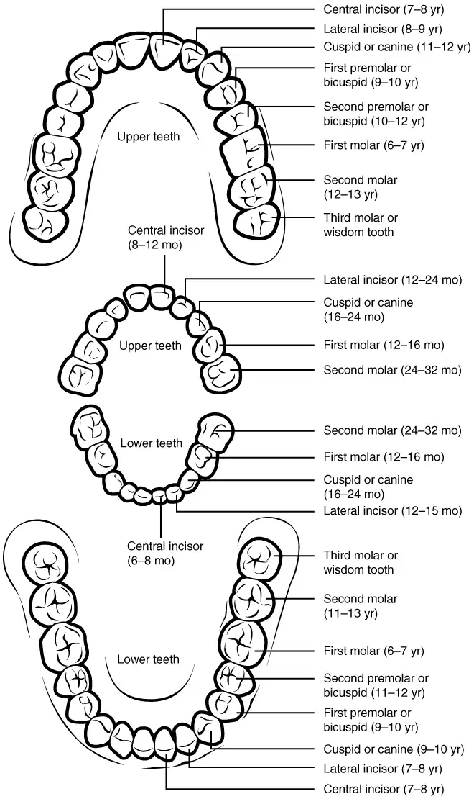
Anatomy of a Tooth¶
The teeth are secured in the alveolar processes (sockets) of the maxilla and the mandible. Gingivae (commonly called the gums) are soft tissues that line the alveolar processes and surround the necks of the teeth. Teeth are also held in their sockets by a connective tissue called the periodontal ligament.
The two main parts of a tooth are the crown, which is the portion projecting above the gum line, and the root, which is embedded within the maxilla and mandible. Both parts contain an inner pulp cavity, containing loose connective tissue through which run nerves and blood vessels. The region of the pulp cavity that runs through the root of the tooth is called the root canal. Surrounding the pulp cavity is dentin, a bone-like tissue. In the root of each tooth, the dentin is covered by a layer of modified bone called cementum. In the crown of each tooth, the dentin is covered by an outer layer of enamel, the hardest substance in the body (Figure 23.11).
Although enamel protects the underlying dentin and pulp cavity, it is still nonetheless susceptible to mechanical and chemical erosion, or what is known as tooth decay. The most common form, dental caries (cavities) develops when colonies of bacteria feeding on sugars in the mouth release acids that cause soft tissue inflammation and degradation of the calcium crystals of the enamel. The digestive functions of the mouth are summarized in Table 23.4.
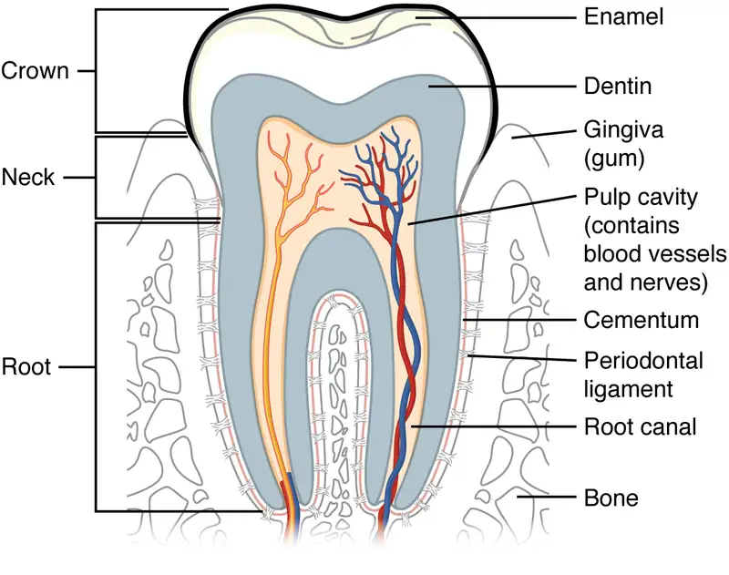
Table 23.4
| Digestive Functions of the Mouth | ||
|---|---|---|
| Structure | Action | Outcome |
| Lips and cheeks | Confine food between teeth | • Food is chewed evenly during mastication |
| Salivary glands | Secrete saliva | • Moisten and lubricate the lining of the mouth and pharynx • Moisten, soften, and dissolve food • Clean the mouth and teeth • Salivary amylase breaks down starch |
| Tongue’s extrinsic muscles | Move tongue sideways, and in and out | • Manipulate food for chewing • Shape food into a bolus • Manipulate food for swallowing |
| Tongue’s intrinsic muscles | Change tongue shape | • Manipulate food for swallowing |
| Taste buds | Sense food in mouth and sense taste | • Nerve impulses from taste buds are conducted to salivary nuclei in the brain stem and then to salivary glands, stimulating saliva secretion |
| Lingual glands | Secrete lingual lipase | • Activated in the stomach • Break down triglycerides into fatty acids and diglycerides |
| Teeth | Shred and crush food | • Break down solid food into smaller particles for deglutition |
The Pharynx¶
The pharynx (throat) is involved in both digestion and respiration. It receives food and air from the mouth, and air from the nasal cavities. When food enters the pharynx, involuntary muscle contractions close off the air passageways.
A short tube of skeletal muscle lined with a mucous membrane, the pharynx runs from the posterior oral and nasal cavities to the opening of the esophagus and larynx. It has three subdivisions. The most superior, the nasopharynx, is involved only in breathing and speech. The other two subdivisions, the oropharynx and the laryngopharynx, are used for both breathing and digestion. The oropharynx begins inferior to the nasopharynx and is continuous below with the laryngopharynx (Figure 23.12). The inferior border of the laryngopharynx connects to the esophagus, whereas the anterior portion connects to the larynx, allowing air to flow into the bronchial tree.
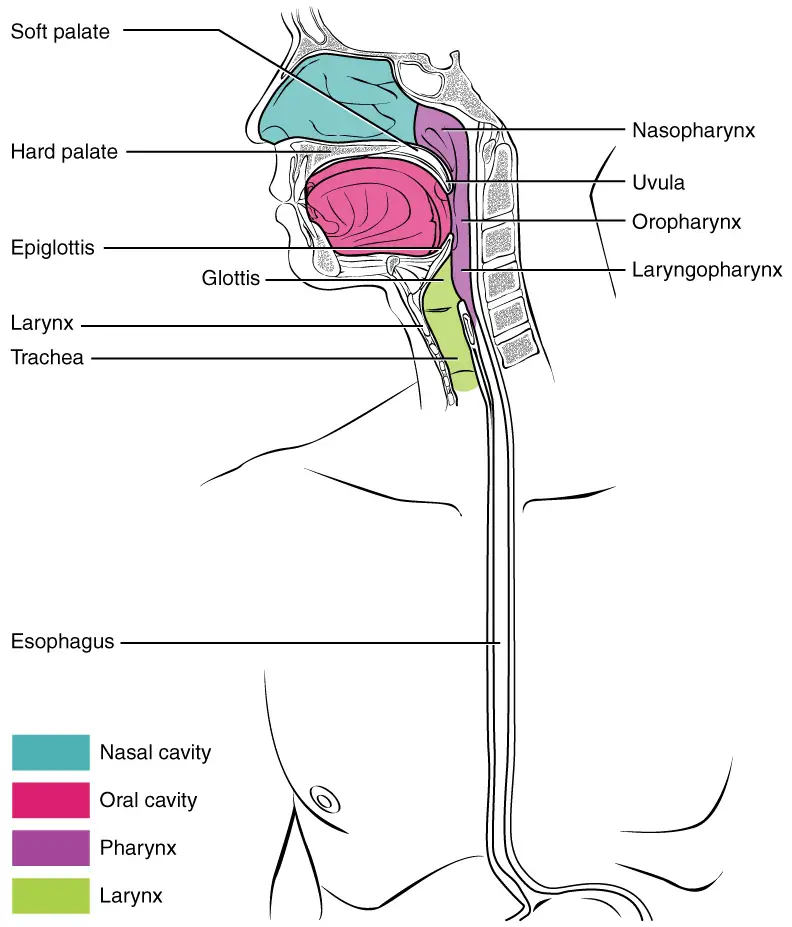
Histologically, the wall of the oropharynx is similar to that of the oral cavity. The mucosa includes a stratified squamous epithelium that is endowed with mucus-producing glands. During swallowing, the elevator skeletal muscles of the pharynx contract, raising and expanding the pharynx to receive the bolus of food. Once received, these muscles relax and the constrictor muscles of the pharynx contract, forcing the bolus into the esophagus and initiating peristalsis.
Usually during swallowing, the soft palate and uvula rise reflexively to close off the entrance to the nasopharynx. At the same time, the larynx is pulled superiorly and the cartilaginous epiglottis, its most superior structure, folds inferiorly, covering the glottis (the opening to the larynx); this process effectively blocks access to the trachea and bronchi. When the food “goes down the wrong way,” it goes into the trachea. When food enters the trachea, the reaction is to cough, which usually forces the food up and out of the trachea, and back into the pharynx.
The Esophagus¶
The esophagus is a muscular tube that connects the pharynx to the stomach. It is approximately 25.4 cm (10 in) in length, located posterior to the trachea, and remains in a collapsed form when not engaged in swallowing. As you can see in Figure 23.13, the esophagus runs a mainly straight route through the mediastinum of the thorax. To enter the abdomen, the esophagus penetrates the diaphragm through an opening called the esophageal hiatus.
Passage of Food through the Esophagus¶
The upper esophageal sphincter, which is continuous with the inferior pharyngeal constrictor, controls the movement of food from the pharynx into the esophagus. The upper two-thirds of the esophagus consists of both smooth and skeletal muscle fibers, with the latter fading out in the bottom third of the esophagus. Rhythmic waves of peristalsis, which begin in the upper esophagus, propel the bolus of food toward the stomach. Meanwhile, secretions from the esophageal mucosa lubricate the esophagus and food. Food passes from the esophagus into the stomach at the lower esophageal sphincter (also called the gastroesophageal or cardiac sphincter). Recall that sphincters are muscles that surround tubes and serve as valves, closing the tube when the sphincters contract and opening it when they relax. The lower esophageal sphincter relaxes to let food pass into the stomach, and then contracts to prevent stomach acids from backing up into the esophagus. Surrounding this sphincter is the muscular diaphragm, which helps close off the sphincter when no food is being swallowed. When the lower esophageal sphincter does not completely close, the stomach’s contents can reflux (that is, back up into the esophagus), causing heartburn or gastroesophageal reflux disease (GERD).
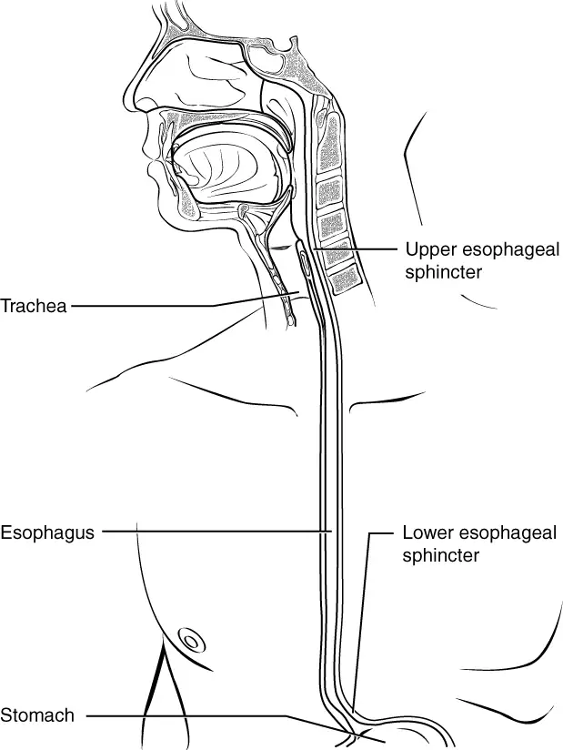
Histology of the Esophagus¶
The mucosa of the esophagus is made up of an epithelial lining that contains non-keratinized, stratified squamous epithelium, with a layer of basal and parabasal cells. This epithelium protects against erosion from food particles. The mucosa’s lamina propria contains mucus-secreting glands. The muscularis layer changes according to location: In the upper third of the esophagus, the muscularis is skeletal muscle. In the middle third, it is both skeletal and smooth muscle. In the lower third, it is smooth muscle. As mentioned previously, the most superficial layer of the esophagus is called the adventitia, not the serosa. In contrast to the stomach and intestines, the loose connective tissue of the adventitia is not covered by a fold of visceral peritoneum. The digestive functions of the esophagus are identified in Table 23.5.
Table 23.5
| Digestive Functions of the Esophagus | |
|---|---|
| Action | Outcome |
| Upper esophageal sphincter relaxation | Allows the bolus to move from the laryngopharynx to the esophagus |
| Peristalsis | Propels the bolus through the esophagus |
| Lower esophageal sphincter relaxation | Allows the bolus to move from the esophagus into the stomach and prevents chyme from entering the esophagus |
| Mucus secretion | Lubricates the esophagus, allowing easy passage of the bolus |
Deglutition¶
Deglutition is another word for swallowing—the movement of food from the mouth to the stomach. The entire process takes about 4 to 8 seconds for solid or semisolid food, and about 1 second for very soft food and liquids. Although this sounds quick and effortless, deglutition is, in fact, a complex process that involves both the skeletal muscle of the tongue and the muscles of the pharynx and esophagus. It is aided by the presence of mucus and saliva. There are three stages in deglutition: the voluntary phase, the pharyngeal phase, and the esophageal phase (Figure 23.14). The autonomic nervous system controls the latter two phases.
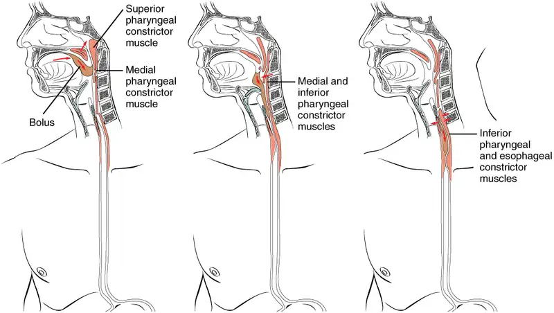
The Voluntary Phase¶
The voluntary phase of deglutition (also known as the oral or buccal phase) is so called because you can control when you swallow food. In this phase, chewing has been completed and swallowing is set in motion. The tongue moves upward and backward against the palate, pushing the bolus to the back of the oral cavity and into the oropharynx. Other muscles keep the mouth closed and prevent food from falling out. At this point, the two involuntary phases of swallowing begin.
The Pharyngeal Phase¶
In the pharyngeal phase, stimulation of receptors in the oropharynx sends impulses to the deglutition center (a collection of neurons that controls swallowing) in the medulla oblongata. Impulses are then sent back to the uvula and soft palate, causing them to move upward and close off the nasopharynx. The laryngeal muscles also constrict to prevent aspiration of food into the trachea. At this point, deglutition apnea takes place, which means that breathing ceases for a very brief time. Contractions of the pharyngeal constrictor muscles move the bolus through the oropharynx and laryngopharynx. Relaxation of the upper esophageal sphincter then allows food to enter the esophagus.
The Esophageal Phase¶
The entry of food into the esophagus marks the beginning of the esophageal phase of deglutition and the initiation of peristalsis. As in the previous phase, the complex neuromuscular actions are controlled by the medulla oblongata. Peristalsis propels the bolus through the esophagus and toward the stomach. The circular muscle layer of the muscularis contracts, pinching the esophageal wall and forcing the bolus forward. At the same time, the longitudinal muscle layer of the muscularis also contracts, shortening this area and pushing out its walls to receive the bolus. In this way, a series of contractions keeps moving food toward the stomach. When the bolus nears the stomach, distention of the esophagus initiates a short reflex relaxation of the lower esophageal sphincter that allows the bolus to pass into the stomach. During the esophageal phase, esophageal glands secrete mucus that lubricates the bolus and minimizes friction.
Interactive
Watch thisanimation to see how swallowing is a complex process that involves the nervous system to coordinate the actions of upper respiratory and digestive activities. During which stage of swallowing is there a risk of food entering respiratory pathways and how is this risk blocked?
23.4 The Stomach¶
Learning Objectives
By the end of this section, you will be able to:
- Label on a diagram the four main regions of the stomach, its curvatures, and its sphincter
- Identify the four main types of secreting cells in gastric glands, and their important products
- Explain why the stomach does not digest itself
- Describe the mechanical and chemical digestion of food entering the stomach
Although a minimal amount of carbohydrate digestion occurs in the mouth, chemical digestion really gets underway in the stomach. An expansion of the alimentary canal that lies immediately inferior to the esophagus, the stomach links the esophagus to the first part of the small intestine (the duodenum) and is relatively fixed in place at its esophageal and duodenal ends. In between, however, it can be a highly active structure, contracting and continually changing position and size. These contractions provide mechanical assistance to digestion. The empty stomach is only about the size of your fist, but can stretch to hold as much as 4 liters of food and fluid, or more than 75 times its empty volume, and then return to its resting size when empty. Although you might think that the size of a person’s stomach is related to how much food that individual consumes, body weight does not correlate with stomach size. Rather, when you eat greater quantities of food—such as at holiday dinner—you stretch the stomach more than when you eat less.
Popular culture tends to refer to the stomach as the location where all digestion takes place. Of course, this is not true. An important function of the stomach is to serve as a temporary holding chamber. You can ingest a meal far more quickly than it can be digested and absorbed by the small intestine. Thus, the stomach holds food and parses only small amounts into the small intestine at a time. Foods are not processed in the order they are eaten; rather, they are mixed together with digestive juices in the stomach until they are converted into chyme, which is released into the small intestine.
As you will see in the sections that follow, the stomach plays several important roles in chemical digestion, including the continued digestion of carbohydrates and the initial digestion of proteins and triglycerides. Little if any nutrient absorption occurs in the stomach, with the exception of the negligible amount of nutrients in alcohol.
Structure¶
There are four main regions in the stomach: the cardia, fundus, body, and pylorus (Figure 23.15). The cardia (or cardiac region) is the point where the esophagus connects to the stomach and through which food passes into the stomach. Located inferior to the diaphragm, above and to the left of the cardia, is the dome-shaped fundus. Below the fundus is the body, the main part of the stomach. The funnel-shaped pylorus connects the stomach to the duodenum. The wider end of the funnel, the pyloric antrum, connects to the body of the stomach. The narrower end is called the pyloric canal, which connects to the duodenum. The smooth muscle pyloric sphincter is located at this latter point of connection and controls stomach emptying. In the absence of food, the stomach deflates inward, and its mucosa and submucosa fall into a large fold called a ruga.
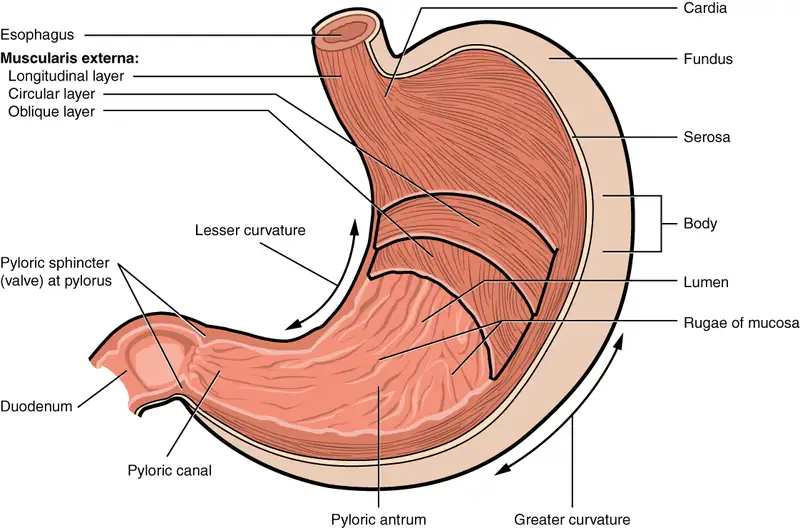
The convex lateral surface of the stomach is called the greater curvature; the concave medial border is the lesser curvature. The stomach is held in place by the lesser omentum, which extends from the liver to the lesser curvature, and the greater omentum, which runs from the greater curvature to the posterior abdominal wall.
Histology¶
The wall of the stomach is made of the same four layers as most of the rest of the alimentary canal, but with adaptations to the mucosa and muscularis for the unique functions of this organ. In addition to the typical circular and longitudinal smooth muscle layers, the muscularis has an inner oblique smooth muscle layer (Figure 23.16). As a result, in addition to moving food through the canal, the stomach can vigorously churn food, mechanically breaking it down into smaller particles.
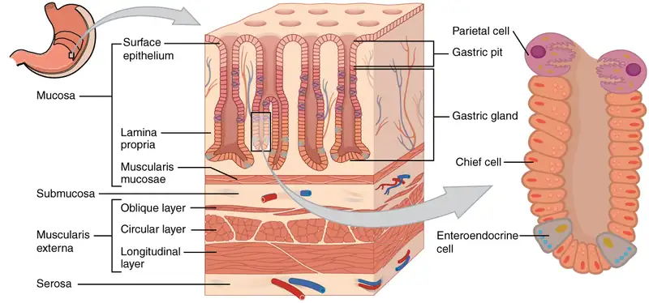
The stomach mucosa’s epithelial lining consists only of surface mucus cells, which secrete a protective coat of alkaline mucus. A vast number of gastric pits dot the surface of the epithelium, giving it the appearance of a well-used pincushion, and mark the entry to each gastric gland, which secretes a complex digestive fluid referred to as gastric juice.
Although the walls of the gastric pits are made up primarily of mucus cells, the gastric glands are made up of different types of cells. The glands of the cardia and pylorus are composed primarily of mucus-secreting cells. Cells that make up the pyloric antrum secrete mucus and a number of hormones, including the majority of the stimulatory hormone, gastrin. The much larger glands of the fundus and body of the stomach, the site of most chemical digestion, produce most of the gastric secretions. These glands are made up of a variety of secretory cells. These include parietal cells, chief cells, mucous neck cells, and enteroendocrine cells.
Parietal cells—Located primarily in the middle region of the gastric glands are parietal cells, which are among the most highly differentiated of the body’s epithelial cells. These relatively large cells produce both hydrochloric acid (HCl) and intrinsic factor. HCl is responsible for the high acidity (pH 1.5 to 3.5) of the stomach contents and is needed to activate the protein-digesting enzyme, pepsin. The acidity also kills much of the bacteria you ingest with food and helps to denature proteins, making them more available for enzymatic digestion. Intrinsic factor is a glycoprotein necessary for the absorption of vitamin B12 in the small intestine.
Chief cells—Located primarily in the basal regions of gastric glands are chief cells, which secrete pepsinogen, the inactive proenzyme form of pepsin. HCl is necessary for the conversion of pepsinogen to pepsin.
Mucous neck cells—Gastric glands in the upper part of the stomach contain mucous neck cells that secrete thin, acidic mucus that is much different from the mucus secreted by the goblet cells of the surface epithelium. The role of this mucus is not currently known.
Enteroendocrine cells—Finally, enteroendocrine cells found in the gastric glands secrete various hormones into the interstitial fluid of the lamina propria. These include gastrin, which is released mainly by enteroendocrine G cells.
Table 23.6 describes the digestive functions of important hormones secreted by the stomach.
Interactive
Watch this animation that depicts the structure of the stomach and how this structure functions in the initiation of protein digestion. This view of the stomach shows the characteristic rugae. What is the function of these rugae?
Table 23.6
| Hormones Secreted by the Stomach | ||||
|---|---|---|---|---|
| Hormone | Production site | Production stimulus | Target organ | Action |
| Gastrin | Stomach mucosa, mainly G cells of the pyloric antrum | Presence of peptides and amino acids in stomach | Stomach | Increases secretion by gastric glands; promotes gastric emptying |
| Gastrin | Stomach mucosa, mainly G cells of the pyloric antrum | Presence of peptides and amino acids in stomach | Small intestine | Promotes intestinal muscle contraction |
| Gastrin | Stomach mucosa, mainly G cells of the pyloric antrum | Presence of peptides and amino acids in stomach | Ileocecal valve | Relaxes valve |
| Gastrin | Stomach mucosa, mainly G cells of the pyloric antrum | Presence of peptides and amino acids in stomach | Large intestine | Triggers mass movements |
| Ghrelin | Stomach mucosa, mainly fundus | Fasting state (levels increase just prior to meals) | Hypothalamus | Regulates food intake, primarily by stimulating hunger and satiety |
| Histamine | Stomach mucosa | Presence of food in the stomach | Stomach | Stimulates parietal cells to release HCl |
| Serotonin | Stomach mucosa | Presence of food in the stomach | Stomach | Contracts stomach muscle |
| Somatostatin | Mucosa of stomach, especially pyloric antrum; also duodenum | Presence of food in the stomach; sympathetic axon stimulation | Stomach | Restricts all gastric secretions, gastric motility, and emptying |
| Somatostatin | Mucosa of stomach, especially pyloric antrum; also duodenum | Presence of food in the stomach; sympathetic axon stimulation | Pancreas | Restricts pancreatic secretions |
| Somatostatin | Mucosa of stomach, especially pyloric antrum; also duodenum | Presence of food in the stomach; sympathetic axon stimulation | Small intestine | Reduces intestinal absorption by reducing blood flow |
Gastric Secretion¶
The secretion of gastric juice is controlled by both nerves and hormones. Stimuli in the brain, stomach, and small intestine activate or inhibit gastric juice production. This is why the three phases of gastric secretion are called the cephalic, gastric, and intestinal phases (Figure 23.17). However, once gastric secretion begins, all three phases can occur simultaneously.
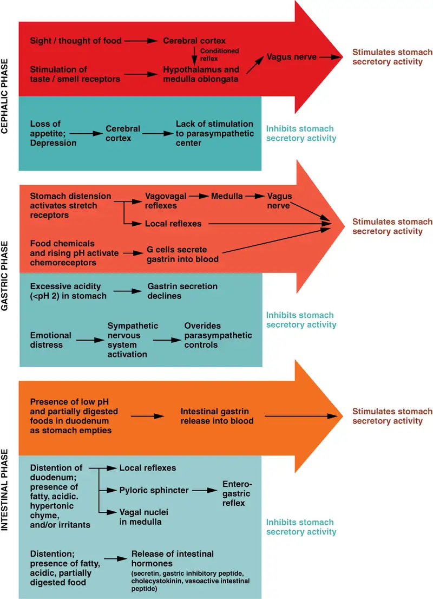
The cephalic phase (reflex phase) of gastric secretion, which is relatively brief, takes place before food enters the stomach. The smell, taste, sight, or thought of food triggers this phase. For example, when you bring a piece of sushi to your lips, impulses from receptors in your taste buds or the nose are relayed to your brain, which returns signals that increase gastric secretion to prepare your stomach for digestion. This enhanced secretion is a conditioned reflex, meaning it occurs only if you like or want a particular food. Depression and loss of appetite can suppress the cephalic reflex.
The gastric phase of secretion lasts 3 to 4 hours, and is set in motion by local neural and hormonal mechanisms triggered by the entry of food into the stomach. For example, when your sushi reaches the stomach, it creates distention that activates the stretch receptors. This stimulates parasympathetic neurons to release acetylcholine, which then provokes increased secretion of gastric juice. Partially digested proteins, caffeine, and rising pH stimulate the release of gastrin from enteroendocrine G cells, which in turn induces parietal cells to increase their production of HCl, which is needed to create an acidic environment for the conversion of pepsinogen to pepsin, and protein digestion. Additionally, the release of gastrin activates vigorous smooth muscle contractions. However, it should be noted that the stomach does have a natural means of avoiding excessive acid secretion and potential heartburn. Whenever pH levels drop too low, cells in the stomach react by suspending HCl secretion and increasing mucous secretions.
The intestinal phase of gastric secretion has both excitatory and inhibitory elements. The duodenum has a major role in regulating the stomach and its emptying. When partially digested food fills the duodenum, intestinal mucosal cells release a hormone called intestinal (enteric) gastrin, which further excites gastric juice secretion. This stimulatory activity is brief, however, because when the intestine distends with chyme, the enterogastric reflex inhibits secretion. One of the effects of this reflex is to close the pyloric sphincter, which blocks additional chyme from entering the duodenum.
The Mucosal Barrier¶
The mucosa of the stomach is exposed to the highly corrosive acidity of gastric juice. Gastric enzymes that can digest protein can also digest the stomach itself. The stomach is protected from self-digestion by the mucosal barrier. This barrier has several components. First, the stomach wall is covered by a thick coating of bicarbonate-rich mucus. This mucus forms a physical barrier, and its bicarbonate ions neutralize acid. Second, the epithelial cells of the stomach's mucosa meet at tight junctions, which block gastric juice from penetrating the underlying tissue layers. Finally, stem cells located where gastric glands join the gastric pits quickly replace damaged epithelial mucosal cells, when the epithelial cells are shed. In fact, the surface epithelium of the stomach is completely replaced every 3 to 6 days.
Homeostatic Imbalances: Ulcers: When the Mucosal Barrier Breaks Down
As effective as the mucosal barrier is, it is not a “fail-safe” mechanism. Sometimes, gastric juice eats away at the superficial lining of the stomach mucosa, creating erosions, which mostly heal on their own. Deeper and larger erosions are called ulcers.
Why does the mucosal barrier break down? A number of factors can interfere with its ability to protect the stomach lining. The majority of all ulcers are caused by either excessive intake of non-steroidal anti-inflammatory drugs (NSAIDs), including aspirin, or Helicobacter pylori infection.
Antacids help relieve symptoms of ulcers such as “burning” pain and indigestion. When ulcers are caused by NSAID use, switching to other classes of pain relievers allows healing. When caused by H. pylori infection, antibiotics are effective.
A potential complication of ulcers is perforation: Perforated ulcers create a hole in the stomach wall, resulting in peritonitis (inflammation of the peritoneum). These ulcers must be repaired surgically.
Digestive Functions of the Stomach¶
The stomach participates in virtually all the digestive activities with the exception of ingestion and defecation. Although almost all absorption takes place in the small intestine, the stomach does absorb some drugs, such as alcohol and aspirin.
Mechanical Digestion¶
Within a few moments after food enters your stomach, mixing waves begin to occur at intervals of approximately 20 seconds. A mixing wave is a unique type of peristalsis that mixes and softens the food with gastric juices to create chyme. The initial mixing waves are relatively gentle, but these are followed by more intense waves, starting at the body of the stomach and increasing in force as they reach the pylorus. It is fair to say that long before your sushi exits through the pyloric sphincter, it bears little resemblance to the sushi you ate.
The pylorus, which holds around 30 mL (1 fluid ounce) of chyme, acts as a filter, permitting only liquids and small food particles to pass through the mostly, but not fully, closed pyloric sphincter. In a process called gastric emptying, rhythmic mixing waves force about 3 mL of chyme at a time through the pyloric sphincter and into the duodenum. Release of a greater amount of chyme at one time would overwhelm the capacity of the small intestine to handle it. The rest of the chyme is pushed back into the body of the stomach, where it continues mixing. This process is repeated when the next mixing waves force more chyme into the duodenum.
Gastric emptying is regulated by both the stomach and the duodenum. The presence of chyme in the duodenum activates receptors that inhibit gastric secretion. This prevents additional chyme from being released by the stomach before the duodenum is ready to process it.
Chemical Digestion¶
The fundus plays an important role, because it stores both undigested food and gases that are released during the process of chemical digestion. Food may sit in the fundus of the stomach for a while before being mixed with the chyme. While the food is in the fundus, the digestive activities of salivary amylase continue until the food begins mixing with the acidic chyme. Ultimately, mixing waves incorporate this food with the chyme, the acidity of which inactivates salivary amylase and activates lingual lipase. Lingual lipase then begins breaking down triglycerides into free fatty acids, and mono- and diglycerides.
The breakdown of protein begins in the stomach through the actions of HCl and the enzyme pepsin.
Its numerous digestive functions notwithstanding, there is only one stomach function necessary to life: the production of intrinsic factor. The intestinal absorption of vitamin B12, which is necessary for both the production of mature red blood cells and normal neurological functioning, cannot occur without intrinsic factor. People who undergo total gastrectomy (stomach removal)—for life-threatening stomach cancer, for example—can survive with minimal digestive dysfunction if they receive vitamin B12 injections.
The contents of the stomach are completely emptied into the duodenum within 2 to 4 hours after you eat a meal. Different types of food take different amounts of time to process. Foods heavy in carbohydrates empty fastest, followed by high-protein foods. Meals with a high triglyceride content remain in the stomach the longest. Since enzymes in the small intestine digest fats slowly, food can stay in the stomach for 6 hours or longer when the duodenum is processing fatty chyme. However, note that this is still a fraction of the 24 to 72 hours that full digestion typically takes from start to finish.
23.5 The Small and Large Intestines¶
Learning Objectives
By the end of this section, you will be able to:
- Compare and contrast the location and gross anatomy of the small and large intestines
- Identify three main adaptations of the small intestine wall that increase its absorptive capacity
- Describe the mechanical and chemical digestion of chyme upon its release into the small intestine
- List three features unique to the wall of the large intestine and identify their contributions to its function
- Identify the beneficial roles of the bacterial flora in digestive system functioning
- Trace the pathway of food waste from its point of entry into the large intestine through its exit from the body as feces
The word intestine is derived from a Latin root meaning “internal,” and indeed, the two organs together nearly fill the interior of the abdominal cavity. In addition, called the small and large bowel, or colloquially the “guts,” they constitute the greatest mass and length of the alimentary canal and, with the exception of ingestion, perform all digestive system functions.
The Small Intestine¶
Chyme released from the stomach enters the small intestine, which is the primary digestive organ in the body. Not only is this where most digestion occurs, it is also where practically all absorption occurs. The longest part of the alimentary canal, the small intestine is about 3.05 meters (10 feet) long in a living person (but about twice as long in a cadaver due to the loss of muscle tone). Since this makes it about five times longer than the large intestine, you might wonder why it is called “small.” In fact, its name derives from its relatively smaller diameter of only about 2.54 cm (1 in), compared with 7.62 cm (3 in) for the large intestine. As we’ll see shortly, in addition to its length, the folds and projections of the lining of the small intestine work to give it an enormous surface area, which is approximately 200 m2, more than 100 times the surface area of your skin. This large surface area is necessary for complex processes of digestion and absorption that occur within it.
Structure¶
The coiled tube of the small intestine is subdivided into three regions. From proximal (at the stomach) to distal, these are the duodenum, jejunum, and ileum (Figure 23.18).
The shortest region is the 25.4-cm (10-in) duodenum, which begins at the pyloric sphincter. Just past the pyloric sphincter, it bends posteriorly behind the peritoneum, becoming retroperitoneal, and then makes a C-shaped curve around the head of the pancreas before ascending anteriorly again to return to the peritoneal cavity and join the jejunum. The duodenum can therefore be subdivided into four segments: the superior, descending, horizontal, and ascending duodenum.
Of particular interest is the hepatopancreatic ampulla (ampulla of Vater). Located in the duodenal wall, the ampulla marks the transition from the anterior portion of the alimentary canal to the mid-region, and is where the bile duct (through which bile passes from the liver) and the main pancreatic duct (through which pancreatic juice passes from the pancreas) join. This ampulla opens into the duodenum at a tiny volcano-shaped structure called the major duodenal papilla. The hepatopancreatic sphincter (sphincter of Oddi) regulates the flow of both bile and pancreatic juice from the ampulla into the duodenum.
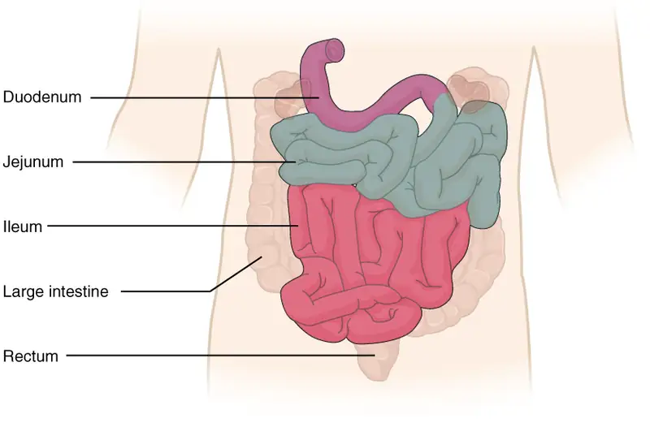
The jejunum is about 0.9 meters (3 feet) long (in life) and runs from the duodenum to the ileum. Jejunum means “empty” in Latin and supposedly was so named by the ancient Greeks who noticed it was always empty at death. No clear demarcation exists between the jejunum and the final segment of the small intestine, the ileum.
The ileum is the longest part of the small intestine, measuring about 1.8 meters (6 feet) in length. It is thicker, more vascular, and has more developed mucosal folds than the jejunum. The ileum joins the cecum, the first portion of the large intestine, at the ileocecal sphincter (or valve). The jejunum and ileum are tethered to the posterior abdominal wall by the mesentery. The large intestine frames these three parts of the small intestine.
Parasympathetic nerve fibers from the vagus nerve and sympathetic nerve fibers from the thoracic splanchnic nerve provide extrinsic innervation to the small intestine. The superior mesenteric artery is its main arterial supply. Veins run parallel to the arteries and drain into the superior mesenteric vein. Nutrient-rich blood from the small intestine is then carried to the liver via the hepatic portal vein.
Histology¶
The wall of the small intestine is composed of the same four layers typically present in the alimentary system. However, three features of the mucosa and submucosa are unique. These features, which increase the absorptive surface area of the small intestine more than 600-fold, include circular folds, villi, and microvilli (Figure 23.19). These adaptations are most abundant in the proximal two-thirds of the small intestine, where the majority of absorption occurs.
![Illustration (a) shows the histological cross-section of the small intestine. The left panel shows a small region of the small intestine, along with the blood vessels and the muscle layers. The middle panel shows a magnified view of a small region of the small intestine, highlighting the absorptive cells, the lacteal and the goblet cells. The right panel shows a further magnified view of the epithelial cells including the microvilli. Illustrations (b) shows a micrograph of the circular folds, and illustration (c) shows a micrograph of the villi. Illustration (d) shows an electron micrograph of the microvilli.](img/2418-histology-small-intestinesn.webp)
Circular folds¶
Also called a plica circulare, a circular fold is a deep ridge in the mucosa and submucosa. Beginning near the proximal part of the duodenum and ending near the middle of the ileum, these folds facilitate absorption. Their shape causes the chyme to spiral, rather than move in a straight line, through the small intestine. Spiraling slows the movement of chyme and provides the time needed for nutrients to be fully absorbed.
Villi¶
Within the circular folds are small (0.5–1 mm long) hairlike vascularized projections called villi (singular = villus) that give the mucosa a furry texture. There are about 20 to 40 villi per square millimeter, increasing the surface area of the epithelium tremendously. The mucosal epithelium, primarily composed of absorptive cells, covers the villi. In addition to muscle and connective tissue to support its structure, each villus contains a capillary bed composed of one arteriole and one venule, as well as a lymphatic capillary called a lacteal. The breakdown products of carbohydrates and proteins (sugars and amino acids) can enter the bloodstream directly, but lipid breakdown products are absorbed by the lacteals and transported to the bloodstream via the lymphatic system.
Microvilli¶
As their name suggests, microvilli (singular = microvillus) are much smaller (1 µm) than villi. They are cylindrical apical surface extensions of the plasma membrane of the mucosa’s epithelial cells, and are supported by microfilaments within those cells. Although their small size makes it difficult to see each microvillus, their combined microscopic appearance suggests a mass of bristles, which is termed the brush border. Fixed to the surface of the microvilli membranes are enzymes that finish digesting carbohydrates and proteins. There are an estimated 200 million microvilli per square millimeter of small intestine, greatly expanding the surface area of the plasma membrane and thus greatly enhancing absorption.
Intestinal Glands¶
In addition to the three specialized absorptive features just discussed, the mucosa between the villi is dotted with deep crevices that each lead into a tubular intestinal gland (crypt of Lieberkühn), which is formed by cells that line the crevices (see Figure 23.19). These produce intestinal juice, a slightly alkaline (pH 7.4 to 7.8) mixture of water and mucus. Each day, about 0.95 to 1.9 liters (1 to 2 quarts) are secreted in response to the distention of the small intestine or the irritating effects of chyme on the intestinal mucosa.
The submucosa of the duodenum is the only site of the complex mucus-secreting duodenal glands (Brunner’s glands), which produce a bicarbonate-rich alkaline mucus that buffers the acidic chyme as it enters from the stomach.
The roles of the cells in the small intestinal mucosa are detailed in Table 23.7.
Table 23.7
| Cells of the Small Intestinal Mucosa | ||
|---|---|---|
| Cell type | Location in the mucosa | Function |
| Absorptive | Epithelium/intestinal glands | Digestion and absorption of nutrients in chyme |
| Goblet | Epithelium/intestinal glands | Secretion of mucus |
| Paneth | Intestinal glands | Secretion of the bactericidal enzyme lysozyme; phagocytosis |
| G cells | Intestinal glands of duodenum | Secretion of the hormone intestinal gastrin |
| I cells | Intestinal glands of duodenum | Secretion of the hormone cholecystokinin, which stimulates release of pancreatic juices and bile |
| K cells | Intestinal glands | Secretion of the hormone glucose-dependent insulinotropic peptide, which stimulates the release of insulin |
| M cells | Intestinal glands of duodenum and jejunum | Secretion of the hormone motilin, which accelerates gastric emptying, stimulates intestinal peristalsis, and stimulates the production of pepsin |
| S cells | Intestinal glands | Secretion of the hormone secretin |
Intestinal MALT¶
The lamina propria of the small intestine mucosa is studded with quite a bit of MALT. In addition to solitary lymphatic nodules, aggregations of intestinal MALT, which are typically referred to as Peyer’s patches, are concentrated in the distal ileum, and serve to keep bacteria from entering the bloodstream. Peyer’s patches are most prominent in young people and become less distinct as you age, which coincides with the general activity of our immune system.
Interactive
Watch this animation that depicts the structure of the small intestine, and, in particular, the villi. Epithelial cells continue the digestion and absorption of nutrients and transport these nutrients to the lymphatic and circulatory systems. In the small intestine, the products of food digestion are absorbed by different structures in the villi. Which structure absorbs and transports fats?
Mechanical Digestion in the Small Intestine¶
The movement of intestinal smooth muscles includes both segmentation and a form of peristalsis called migrating motility complexes. The kind of peristaltic mixing waves seen in the stomach are not observed here.
If you could see into the small intestine when it was going through segmentation, it would look as if the contents were being shoved incrementally back and forth, as the rings of smooth muscle repeatedly contract and then relax. Segmentation in the small intestine does not force chyme through the tract. Instead, it combines the chyme with digestive juices and pushes food particles against the mucosa to be absorbed. The duodenum is where the most rapid segmentation occurs, at a rate of about 12 times per minute. In the ileum, segmentations are only about eight times per minute (Figure 23.20).
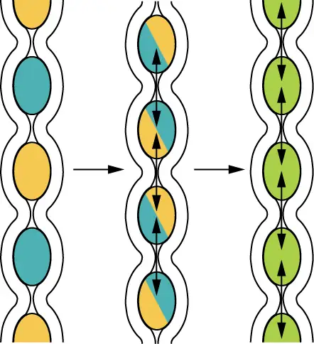
When most of the chyme has been absorbed, the small intestinal wall becomes less distended. At this point, the localized segmentation process is replaced by transport movements. The duodenal mucosa secretes the hormone motilin, which initiates peristalsis in the form of a migrating motility complex. These complexes, which begin in the duodenum, force chyme through a short section of the small intestine and then stop. The next contraction begins a little bit farther down than the first, forces chyme a bit farther through the small intestine, then stops. These complexes move slowly down the small intestine, forcing chyme on the way, taking around 90 to 120 minutes to finally reach the end of the ileum. At this point, the process is repeated, starting in the duodenum.
The ileocecal valve, a sphincter, is usually in a constricted state, but when motility in the ileum increases, this sphincter relaxes, allowing food residue to enter the first portion of the large intestine, the cecum. Relaxation of the ileocecal sphincter is controlled by both nerves and hormones. First, digestive activity in the stomach provokes the gastroileal reflex, which increases the force of ileal segmentation. Second, the stomach releases the hormone gastrin, which enhances ileal motility, thus relaxing the ileocecal sphincter. After chyme passes through, backward pressure helps close the sphincter, preventing backflow into the ileum. Because of this reflex, your lunch is completely emptied from your stomach and small intestine by the time you eat your dinner. It takes about 3 to 5 hours for all chyme to leave the small intestine.
Chemical Digestion in the Small Intestine¶
The digestion of proteins and carbohydrates, which partially occurs in the stomach, is completed in the small intestine with the aid of intestinal and pancreatic juices. Lipids arrive in the intestine largely undigested, so much of the focus here is on lipid digestion, which is facilitated by bile and the enzyme pancreatic lipase.
Moreover, intestinal juice combines with pancreatic juice to provide a liquid medium that facilitates absorption. The intestine is also where most water is absorbed, via osmosis. The small intestine’s absorptive cells also synthesize digestive enzymes and then place them in the plasma membranes of the microvilli. This distinguishes the small intestine from the stomach; that is, enzymatic digestion occurs not only in the lumen, but also on the luminal surfaces of the mucosal cells.
For optimal chemical digestion, chyme must be delivered from the stomach slowly and in small amounts. This is because chyme from the stomach is typically hypertonic, and if large quantities were forced all at once into the small intestine, the resulting osmotic water loss from the blood into the intestinal lumen would result in potentially life-threatening low blood volume. In addition, continued digestion requires an upward adjustment of the low pH of stomach chyme, along with rigorous mixing of the chyme with bile and pancreatic juices. Both processes take time, so the pumping action of the pylorus must be carefully controlled to prevent the duodenum from being overwhelmed with chyme.
Disorders of the Small Intestine: Lactose Intolerance
Lactose intolerance is a condition characterized by indigestion caused by dairy products. It occurs when the absorptive cells of the small intestine do not produce enough lactase, the enzyme that digests the milk sugar lactose. In most mammals, lactose intolerance increases with age. In contrast, some human populations are able to maintain the ability to produce lactase as adults.
In people with lactose intolerance, the lactose in chyme is not digested. Bacteria in the large intestine ferment the undigested lactose, a process that produces gas. In addition to gas, symptoms include abdominal cramps, bloating, and diarrhea. Symptom severity ranges from mild discomfort to severe pain; however, symptoms resolve once the lactose is eliminated in feces.
The hydrogen breath test is used to help diagnose lactose intolerance. Lactose-tolerant people have very little hydrogen in their breath. Those with lactose intolerance exhale hydrogen, which is one of the gases produced by the bacterial fermentation of lactose in the colon. After the hydrogen is absorbed from the intestine, it is transported through blood vessels into the lungs. There are a number of lactose-free dairy products available in grocery stores. In addition, dietary supplements are available. Taken with food, they provide lactase to help digest lactose.
The Large Intestine¶
The large intestine is the terminal part of the alimentary canal. The primary function of this organ is to finish absorption of nutrients and water, synthesize certain vitamins, form feces, and eliminate feces from the body.
Structure¶
The large intestine runs from the appendix to the anus. It frames the small intestine on three sides. Despite its being about one-half as long as the small intestine, it is called large because it is more than twice the diameter of the small intestine, about 3 inches.
Subdivisions¶
The large intestine is subdivided into four main regions: the cecum, the colon, the rectum, and the anus. The ileocecal valve, located at the opening between the ileum and the large intestine, controls the flow of chyme from the small intestine to the large intestine.
Cecum¶
The first part of the large intestine is the cecum, a sac-like structure that is suspended inferior to the ileocecal valve. It is about 6 cm (2.4 in) long, receives the contents of the ileum, and continues the absorption of water and salts. The appendix (or vermiform appendix) is a winding tube that attaches to the cecum. Although the 7.6-cm (3-in) long appendix contains lymphoid tissue, suggesting an immunologic function, this organ is generally considered vestigial. However, at least one recent report postulates a survival advantage conferred by the appendix: In diarrheal illness, the appendix may serve as a bacterial reservoir to repopulate the enteric bacteria for those surviving the initial phases of the illness. Moreover, its twisted anatomy provides a haven for the accumulation and multiplication of enteric bacteria. The mesoappendix, the mesentery of the appendix, tethers it to the mesentery of the ileum.
Colon¶
The cecum blends seamlessly with the colon. Upon entering the colon, the food residue first travels up the ascending colon on the right side of the abdomen. At the inferior surface of the liver, the colon bends to form the right colic flexure (hepatic flexure) and becomes the transverse colon. The region defined as hindgut begins with the last third of the transverse colon and continues on. Food residue passing through the transverse colon travels across to the left side of the abdomen, where the colon angles sharply immediately inferior to the spleen, at the left colic flexure (splenic flexure). From there, food residue passes through the descending colon, which runs down the left side of the posterior abdominal wall. After entering the pelvis inferiorly, it becomes the s-shaped sigmoid colon, which extends medially to the midline (Figure 23.21). The ascending and descending colon, and the rectum (discussed next) are located in the retroperitoneum. The transverse and sigmoid colon are tethered to the posterior abdominal wall by the mesocolon.
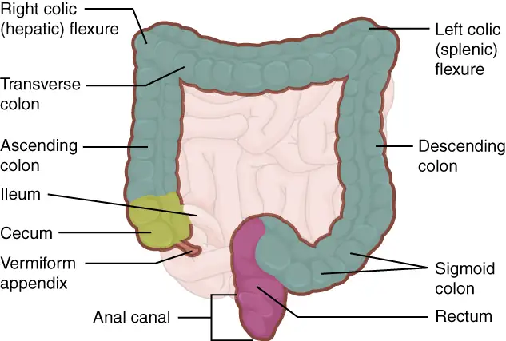
Homeostatic Imbalances: Colorectal Cancer
Each year, approximately 140,000 Americans are diagnosed with colorectal cancer, and another 49,000 die from it, making it one of the most deadly malignancies. People with a family history of colorectal cancer are at increased risk. Smoking, excessive alcohol consumption, and a diet high in animal fat and protein also increase the risk. Despite popular opinion to the contrary, studies support the conclusion that dietary fiber and calcium do not reduce the risk of colorectal cancer.
Colorectal cancer may be signaled by constipation or diarrhea, cramping, abdominal pain, and rectal bleeding. Bleeding from the rectum may be either obvious or occult (hidden in feces). Since most colon cancers arise from benign mucosal growths called polyps, cancer prevention is focused on identifying these polyps. The colonoscopy is both diagnostic and therapeutic. Colonoscopy not only allows identification of precancerous polyps, the procedure also enables them to be removed before they become malignant. Screening for fecal occult blood tests and colonoscopy is recommended for those over 50 years of age.
Rectum¶
Food residue leaving the sigmoid colon enters the rectum in the pelvis, near the third sacral vertebra. The final 20.3 cm (8 in) of the alimentary canal, the rectum extends anterior to the sacrum and coccyx. Even though rectum is Latin for “straight,” this structure follows the curved contour of the sacrum and has three lateral bends that create a trio of internal transverse folds called the rectal valves. These valves help separate the feces from gas to prevent the simultaneous passage of feces and gas.
Anal Canal¶
Finally, food residue reaches the last part of the large intestine, the anal canal, which is located in the perineum, completely outside of the abdominopelvic cavity. This 3.8–5 cm (1.5–2 in) long structure opens to the exterior of the body at the anus. The anal canal includes two sphincters. The internal anal sphincter is made of smooth muscle, and its contractions are involuntary. The external anal sphincter is made of skeletal muscle, which is under voluntary control. Except when defecating, both usually remain closed.
Histology¶
There are several notable differences between the walls of the large and small intestines (Figure 23.22). For example, few enzyme-secreting cells are found in the wall of the large intestine, and there are no circular folds or villi. Other than in the anal canal, the mucosa of the colon is simple columnar epithelium made mostly of enterocytes (absorptive cells) and goblet cells. In addition, the wall of the large intestine has far more intestinal glands, which contain a vast population of enterocytes and goblet cells. These goblet cells secrete mucus that eases the movement of feces and protects the intestine from the effects of the acids and gases produced by enteric bacteria. The enterocytes absorb water and salts as well as vitamins produced by your intestinal bacteria.
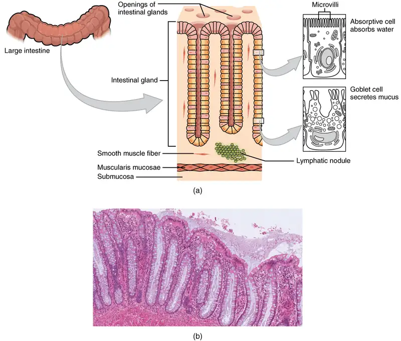
Anatomy¶
Three features are unique to the large intestine: teniae coli, haustra, and epiploic appendages (Figure 23.23). The teniae coli are three bands of smooth muscle that make up the longitudinal muscle layer of the muscularis of the large intestine, except at its terminal end. Tonic contractions of the teniae coli bunch up the colon into a succession of pouches called haustra (singular = haustrum), which are responsible for the wrinkled appearance of the colon. Attached to the teniae coli are small, fat-filled sacs of visceral peritoneum called epiploic appendages. The purpose of these is unknown. Although the rectum and anal canal have neither teniae coli nor haustra, they do have well-developed layers of muscularis that create the strong contractions needed for defecation.
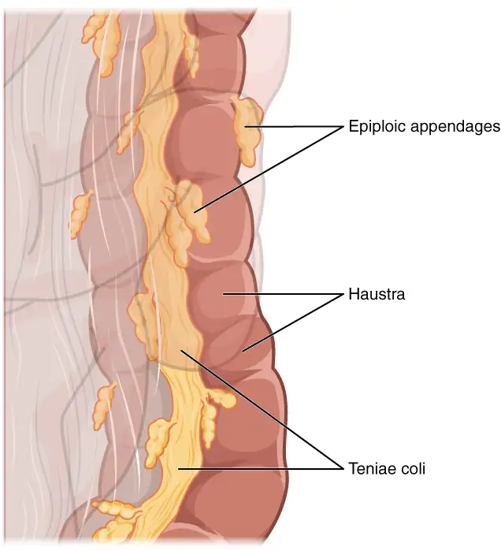
The stratified squamous epithelial mucosa of the anal canal connects to the skin on the outside of the anus. This mucosa varies considerably from that of the rest of the colon to accommodate the high level of abrasion as feces pass through. The anal canal’s mucous membrane is organized into longitudinal folds, each called an anal column, which house a grid of arteries and veins. Two superficial venous plexuses are found in the anal canal: one within the anal columns and one at the anus.
Depressions between the anal columns, each called an anal sinus, secrete mucus that facilitates defecation. The pectinate line (or dentate line) is a horizontal, jagged band that runs circumferentially just below the level of the anal sinuses, and represents the junction between the hindgut and external skin. The mucosa above this line is fairly insensitive, whereas the area below is very sensitive. The resulting difference in pain threshold is due to the fact that the upper region is innervated by visceral sensory fibers, and the lower region is innervated by somatic sensory fibers.
Bacterial Flora¶
Most bacteria that enter the alimentary canal are killed by lysozyme, defensins, HCl, or protein-digesting enzymes. However, trillions of bacteria live within the large intestine and are referred to as the bacterial flora. Most of the more than 700 species of these bacteria are nonpathogenic commensal organisms that cause no harm as long as they stay in the gut lumen. In fact, many facilitate chemical digestion and absorption, and some synthesize certain vitamins, mainly biotin, pantothenic acid, and vitamin K. Some are linked to increased immune response. A refined system prevents these bacteria from crossing the mucosal barrier. First, peptidoglycan, a component of bacterial cell walls, activates the release of chemicals by the mucosa’s epithelial cells, which draft immune cells, especially dendritic cells, into the mucosa. Dendritic cells open the tight junctions between epithelial cells and extend probes into the lumen to evaluate the microbial antigens. The dendritic cells with antigens then travel to neighboring lymphoid follicles in the mucosa where T cells inspect for antigens. This process triggers an IgA-mediated response, if warranted, in the lumen that blocks the commensal organisms from infiltrating the mucosa and setting off a far greater, widespread systematic reaction.
Digestive Functions of the Large Intestine¶
The residue of chyme that enters the large intestine contains few nutrients except water, which is reabsorbed as the residue lingers in the large intestine, typically for 12 to 24 hours. Thus, it may not surprise you that the large intestine can be completely removed without significantly affecting digestive functioning. For example, in severe cases of inflammatory bowel disease, the large intestine can be removed by a procedure known as a colectomy. Often, a new fecal pouch can be crafted from the small intestine and sutured to the anus, but if not, an ileostomy can be created by bringing the distal ileum through the abdominal wall, allowing the watery chyme to be collected in a bag-like adhesive appliance.
Mechanical Digestion¶
In the large intestine, mechanical digestion begins when chyme moves from the ileum into the cecum, an activity regulated by the ileocecal sphincter. Right after you eat, peristalsis in the ileum forces chyme into the cecum. When the cecum is distended with chyme, contractions of the ileocecal sphincter strengthen. Once chyme enters the cecum, colon movements begin.
Mechanical digestion in the large intestine includes a combination of three types of movements. The presence of food residues in the colon stimulates a slow-moving haustral contraction. This type of movement involves sluggish segmentation, primarily in the transverse and descending colons. When a haustrum is distended with chyme, its muscle contracts, pushing the residue into the next haustrum. These contractions occur about every 30 minutes, and each last about 1 minute. These movements also mix the food residue, which helps the large intestine absorb water. The second type of movement is peristalsis, which, in the large intestine, is slower than in the more proximal portions of the alimentary canal. The third type is a mass movement. These strong waves start midway through the transverse colon and quickly force the contents toward the rectum. Mass movements usually occur three or four times per day, either while you eat or immediately afterward. Distension in the stomach and the breakdown products of digestion in the small intestine provoke the gastrocolic reflex, which increases motility, including mass movements, in the colon. Fiber in the diet both softens the stool and increases the power of colonic contractions, optimizing the activities of the colon.
Chemical Digestion¶
Although the glands of the large intestine secrete mucus, they do not secrete digestive enzymes. Therefore, chemical digestion in the large intestine occurs exclusively because of bacteria in the lumen of the colon. Through the process of saccharolytic fermentation, bacteria break down some of the remaining carbohydrates. This results in the discharge of hydrogen, carbon dioxide, and methane gases that create flatus (gas) in the colon; flatulence is excessive flatus. Each day, up to 1500 mL of flatus is produced in the colon. More is produced when you eat foods such as beans, which are rich in otherwise indigestible sugars and complex carbohydrates like soluble dietary fiber.
Absorption, Feces Formation, and Defecation¶
The small intestine absorbs about 90 percent of the water you ingest (either as liquid or within solid food). The large intestine absorbs most of the remaining water, a process that converts the liquid chyme residue into semisolid feces (“stool”). Feces is composed of undigested food residues, unabsorbed digested substances, millions of bacteria, old epithelial cells from the GI mucosa, inorganic salts, and enough water to let it pass smoothly out of the body. Of every 500 mL (17 ounces) of food residue that enters the cecum each day, about 150 mL (5 ounces) become feces.
Feces are eliminated through contractions of the rectal muscles. You help this process by a voluntary procedure called Valsalva’s maneuver, in which you increase intra-abdominal pressure by contracting your diaphragm and abdominal wall muscles, and closing your glottis.
The process of defecation begins when mass movements force feces from the colon into the rectum, stretching the rectal wall and provoking the defecation reflex, which eliminates feces from the rectum. This parasympathetic reflex is mediated by the spinal cord. It contracts the sigmoid colon and rectum, relaxes the internal anal sphincter, and initially contracts the external anal sphincter. The presence of feces in the anal canal sends a signal to the brain, which gives you the choice of voluntarily opening the external anal sphincter (defecating) or keeping it temporarily closed. If you decide to delay defecation, it takes a few seconds for the reflex contractions to stop and the rectal walls to relax. The next mass movement will trigger additional defecation reflexes until you defecate.
If defecation is delayed for an extended time, additional water is absorbed, making the feces firmer and potentially leading to constipation. On the other hand, if the waste matter moves too quickly through the intestines, not enough water is absorbed, and diarrhea can result. This can be caused by the ingestion of foodborne pathogens. In general, diet, health, and stress determine the frequency of bowel movements. The number of bowel movements varies greatly between individuals, ranging from two or three per day to three or four per week.
Interactive
By watching this animation you will see that for the various food groups—proteins, fats, and carbohydrates—digestion begins in different parts of the digestion system, though all end in the same place. Of the three major food classes (carbohydrates, fats, and proteins), which is digested in the mouth, the stomach, and the small intestine?
23.6 Accessory Organs in Digestion: The Liver, Pancreas, and Gallbladder¶
Learning Objectives
By the end of this section, you will be able to:
- State the main digestive roles of the liver, pancreas, and gallbladder
- Identify three main features of liver histology that are critical to its function
- Discuss the composition and function of bile
- Identify the major types of enzymes and buffers present in pancreatic juice
Chemical digestion in the small intestine relies on the activities of three accessory digestive organs: the liver, pancreas, and gallbladder (Figure 23.24). The digestive role of the liver is to produce bile and export it to the duodenum. The gallbladder primarily stores, concentrates, and releases bile. The pancreas produces pancreatic juice, which contains digestive enzymes and bicarbonate ions, and delivers it to the duodenum.
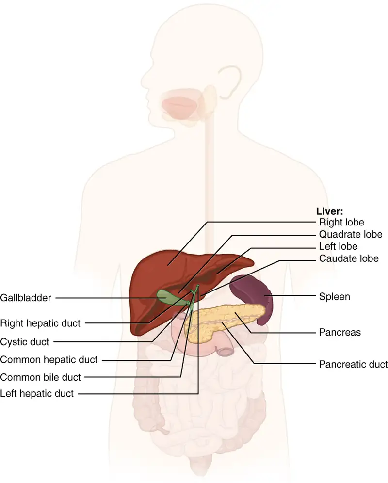
The Liver¶
The liver is the largest gland in the body, weighing about three pounds in an adult. It is also one of the most important organs. In addition to being an accessory digestive organ, it plays a number of roles in metabolism and regulation. The liver lies inferior to the diaphragm in the right upper quadrant of the abdominal cavity and receives protection from the surrounding ribs.
The liver is divided into two primary lobes: a large right lobe and a much smaller left lobe. In the right lobe, some anatomists also identify an inferior quadrate lobe and a posterior caudate lobe, which are defined by internal features. The liver is connected to the abdominal wall and diaphragm by five peritoneal folds referred to as ligaments. These are the falciform ligament, the coronary ligament, two lateral ligaments, and the ligamentum teres hepatis. The falciform ligament and ligamentum teres hepatis are actually remnants of the umbilical vein, and separate the right and left lobes anteriorly. The lesser omentum tethers the liver to the lesser curvature of the stomach.
The porta hepatis (“gate to the liver”) is where the hepatic artery and hepatic portal vein enter the liver. These two vessels, along with the common hepatic duct, run behind the lateral border of the lesser omentum on the way to their destinations. As shown in Figure 23.25, the hepatic artery delivers oxygenated blood from the heart to the liver. The hepatic portal vein delivers partially deoxygenated blood containing nutrients absorbed from the small intestine and actually supplies more oxygen to the liver than do the much smaller hepatic arteries. In addition to nutrients, drugs and toxins are also absorbed. After processing the bloodborne nutrients and toxins, the liver releases nutrients needed by other cells back into the blood, which drains into the central vein and then through the hepatic vein to the inferior vena cava. With this hepatic portal circulation, all blood from the alimentary canal passes through the liver. This largely explains why the liver is the most common site for the metastasis of cancers that originate in the alimentary canal.
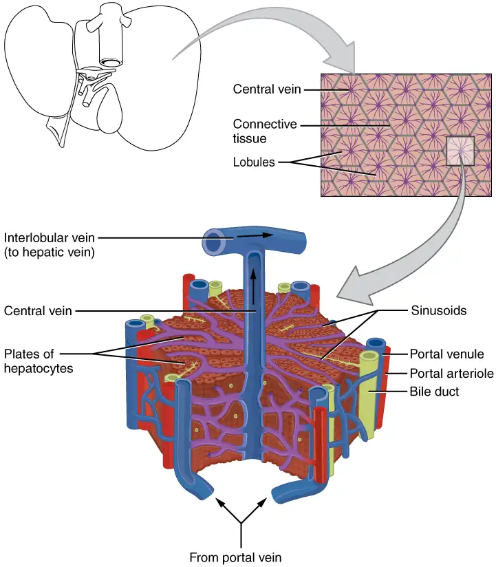
Histology¶
The liver has three main components: hepatocytes, bile canaliculi, and hepatic sinusoids. A hepatocyte is the liver’s main cell type, accounting for around 80 percent of the liver's volume. These cells play a role in a wide variety of secretory, metabolic, and endocrine functions. Plates of hepatocytes called hepatic laminae radiate outward from the portal vein in each hepatic lobule.
Between adjacent hepatocytes, grooves in the cell membranes provide room for each bile canaliculus (plural = canaliculi). These small ducts accumulate the bile produced by hepatocytes. From here, bile flows first into bile ductules and then into bile ducts. The bile ducts unite to form the larger right and left hepatic ducts, which themselves merge and exit the liver as the common hepatic duct. This duct then joins with the cystic duct from the gallbladder, forming the common bile duct through which bile flows into the small intestine.
A hepatic sinusoid is an open, porous blood space formed by fenestrated capillaries from nutrient-rich hepatic portal veins and oxygen-rich hepatic arteries. Hepatocytes are tightly packed around the fenestrated endothelium of these spaces, giving them easy access to the blood. From their central position, hepatocytes process the nutrients, toxins, and waste materials carried by the blood. Materials such as bilirubin are processed and excreted into the bile canaliculi. Other materials including proteins, lipids, and carbohydrates are processed and secreted into the sinusoids or just stored in the cells until called upon. The hepatic sinusoids combine and send blood to a central vein. Blood then flows through a hepatic vein into the inferior vena cava. This means that blood and bile flow in opposite directions. The hepatic sinusoids also contain star-shaped reticuloendothelial cells (Kupffer cells), phagocytes that remove dead red and white blood cells, bacteria, and other foreign material that enter the sinusoids. The portal triad is a distinctive arrangement around the perimeter of hepatic lobules, consisting of three basic structures: a bile duct, a hepatic artery branch, and a hepatic portal vein branch.
Bile¶
Recall that lipids are hydrophobic, that is, they do not dissolve in water. Thus, before they can be digested in the watery environment of the small intestine, large lipid globules must be broken down into smaller lipid globules, a process called emulsification. Bile is a mixture secreted by the liver to accomplish the emulsification of lipids in the small intestine.
Hepatocytes secrete about one liter of bile each day. A yellow-brown or yellow-green alkaline solution (pH 7.6 to 8.6), bile is a mixture of water, bile salts, bile pigments, phospholipids (such as lecithin), electrolytes, cholesterol, and triglycerides. The components most critical to emulsification are bile salts and phospholipids, which have a nonpolar (hydrophobic) region as well as a polar (hydrophilic) region. The hydrophobic region interacts with the large lipid molecules, whereas the hydrophilic region interacts with the watery chyme in the intestine. This results in the large lipid globules being pulled apart into many tiny lipid fragments of about 1 µm in diameter. This change dramatically increases the surface area available for lipid-digesting enzyme activity. This is the same way dish soap works on fats mixed with water.
Bile salts act as emulsifying agents, so they are also important for the absorption of digested lipids. While most constituents of bile are eliminated in feces, bile salts are reclaimed by the enterohepatic circulation. Once bile salts reach the ileum, they are absorbed and returned to the liver in the hepatic portal blood. The hepatocytes then excrete the bile salts into newly formed bile. Thus, this precious resource is recycled.
Bilirubin, the main bile pigment, is a waste product produced when the spleen removes old or damaged red blood cells from the circulation. These breakdown products, including proteins, iron, and toxic bilirubin, are transported to the liver via the splenic vein of the hepatic portal system. In the liver, proteins and iron are recycled, whereas bilirubin is excreted in the bile. It accounts for the green color of bile. Bilirubin is eventually transformed by intestinal bacteria into stercobilin, a brown pigment that gives your stool its characteristic color! In some disease states, bile does not enter the intestine, resulting in white (‘acholic’) stool with a high fat content, since virtually no fats are broken down or absorbed.
Hepatocytes work non-stop, but bile production increases when fatty chyme enters the duodenum and stimulates the secretion of the gut hormone cholecystokinin. Between meals, bile is produced but conserved. The valve-like hepatopancreatic ampulla closes, allowing bile to divert to the gallbladder, where it is concentrated and stored until the next meal.
Interactive
Watch this video to see the structure of the liver and how this structure supports the functions of the liver, including the processing of nutrients, toxins, and wastes. At rest, about 1500 mL of blood per minute flow through the liver. What percentage of this blood flow comes from the hepatic portal system?
The Pancreas¶
The soft, oblong, glandular pancreas lies transversely in the retroperitoneum behind the stomach. Its head is nestled into the “c-shaped” curvature of the duodenum with the body extending to the left about 15.2 cm (6 in) and ending as a tapering tail in the hilum of the spleen. It is a curious mix of exocrine (secreting digestive enzymes) and endocrine (releasing hormones into the blood) functions (Figure 23.26).
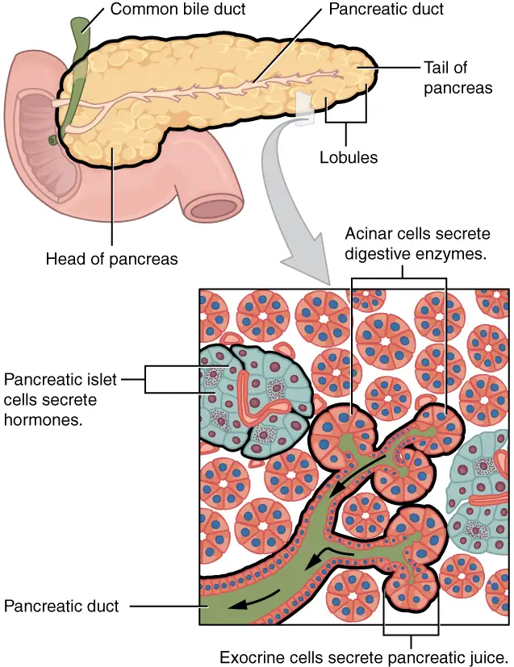
The exocrine part of the pancreas arises as little grape-like cell clusters, each called an acinus (plural = acini), located at the terminal ends of pancreatic ducts. These acinar cells secrete enzyme-rich pancreatic juice into tiny merging ducts that form two dominant ducts. The larger duct fuses with the common bile duct (carrying bile from the liver and gallbladder) just before entering the duodenum via a common opening (the hepatopancreatic ampulla). The smooth muscle sphincter of the hepatopancreatic ampulla controls the release of pancreatic juice and bile into the small intestine. The second and smaller pancreatic duct, the accessory duct (duct of Santorini), runs from the pancreas directly into the duodenum, approximately 1 inch above the hepatopancreatic ampulla. When present, it is a persistent remnant of pancreatic development.
Scattered through the sea of exocrine acini are small islands of endocrine cells, the islets of Langerhans. These vital cells produce the hormones pancreatic polypeptide, insulin, glucagon, and somatostatin.
Pancreatic Juice¶
The pancreas produces over a liter of pancreatic juice each day. Unlike bile, it is clear and composed mostly of water along with some salts, sodium bicarbonate, and several digestive enzymes. Sodium bicarbonate is responsible for the slight alkalinity of pancreatic juice (pH 7.1 to 8.2), which serves to buffer the acidic gastric juice in chyme, inactivate pepsin from the stomach, and create an optimal environment for the activity of pH-sensitive digestive enzymes in the small intestine. Pancreatic enzymes are active in the digestion of sugars, proteins, and fats.
The pancreas produces protein-digesting enzymes in their inactive forms. These enzymes are activated in the duodenum. If produced in an active form, they would digest the pancreas (which is exactly what occurs in the disease, pancreatitis). The intestinal brush border enzyme enteropeptidase stimulates the activation of trypsin from trypsinogen of the pancreas, which in turn changes the pancreatic enzymes procarboxypeptidase and chymotrypsinogen into their active forms, carboxypeptidase and chymotrypsin.
The enzymes that digest starch (amylase), fat (lipase), and nucleic acids (nuclease) are secreted in their active forms, since they do not attack the pancreas as do the protein-digesting enzymes.
Pancreatic Secretion¶
Regulation of pancreatic secretion is the job of hormones and the parasympathetic nervous system. The entry of acidic chyme into the duodenum stimulates the release of secretin, which in turn causes the duct cells to release bicarbonate-rich pancreatic juice. The presence of proteins and fats in the duodenum stimulates the secretion of CCK, which then stimulates the acini to secrete enzyme-rich pancreatic juice and enhances the activity of secretin. Parasympathetic regulation occurs mainly during the cephalic and gastric phases of gastric secretion, when vagal stimulation prompts the secretion of pancreatic juice.
Usually, the pancreas secretes just enough bicarbonate to counterbalance the amount of HCl produced in the stomach. Hydrogen ions enter the blood when bicarbonate is secreted by the pancreas. Thus, the acidic blood draining from the pancreas neutralizes the alkaline blood draining from the stomach, maintaining the pH of the venous blood that flows to the liver.
The Gallbladder¶
The gallbladder is 8–10 cm (~3–4 in) long and is nested in a shallow area on the posterior aspect of the right lobe of the liver. This muscular sac stores, concentrates, and, when stimulated, propels the bile into the duodenum via the common bile duct. It is divided into three regions. The fundus is the widest portion and tapers medially into the body, which in turn narrows to become the neck. The neck angles slightly superiorly as it approaches the hepatic duct. The cystic duct is 1–2 cm (less than 1 in) long and turns inferiorly as it bridges the neck and hepatic duct.
The simple columnar epithelium of the gallbladder mucosa is organized in rugae, similar to those of the stomach. There is no submucosa in the gallbladder wall. The wall’s middle, muscular coat is made of smooth muscle fibers. When these fibers contract, the gallbladder’s contents are ejected through the cystic duct and into the bile duct (Figure 23.27). Visceral peritoneum reflected from the liver capsule holds the gallbladder against the liver and forms the outer coat of the gallbladder. The gallbladder's mucosa absorbs water and ions from bile, concentrating it by up to 10-fold.
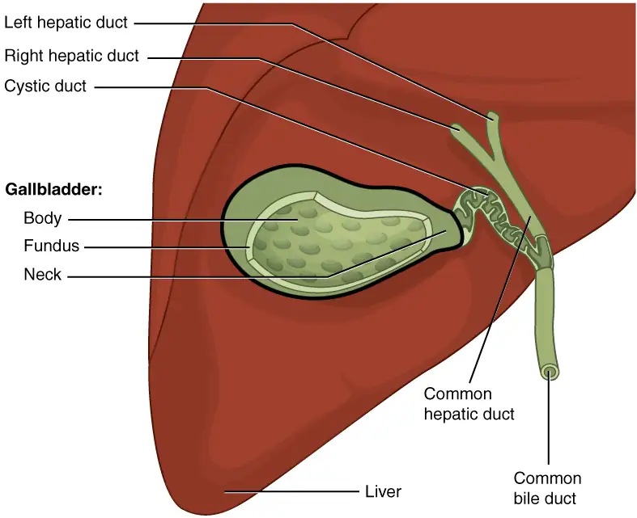
23.7 Chemical Digestion and Absorption: A Closer Look¶
Learning Objectives
By the end of this section, you will be able to:
- Identify the locations and primary secretions involved in the chemical digestion of carbohydrates, proteins, lipids, and nucleic acids
- Compare and contrast absorption of the hydrophilic and hydrophobic nutrients
As you have learned, the process of mechanical digestion is relatively simple. It involves the physical breakdown of food but does not alter its chemical makeup. Chemical digestion, on the other hand, is a complex process that reduces food into its chemical building blocks, which are then absorbed to nourish the cells of the body (Figure 23.28). In this section, you will look more closely at the processes of chemical digestion and absorption.
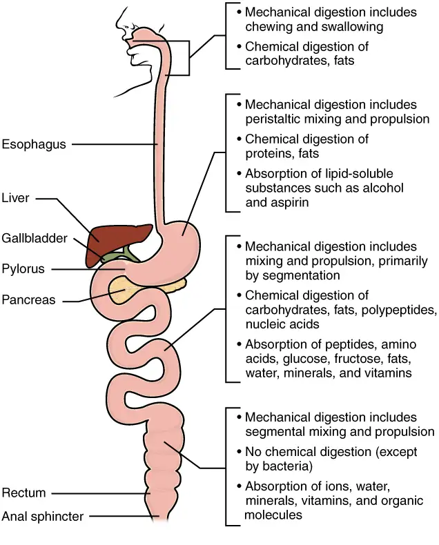
Chemical Digestion¶
Large food molecules (for example, proteins, lipids, nucleic acids, and starches) must be broken down into subunits that are small enough to be absorbed by the lining of the alimentary canal. This is accomplished by enzymes through hydrolysis. The many enzymes involved in chemical digestion are summarized in Table 23.8.
Table 23.8 *These enzymes have been activated by other substances.
| The Digestive Enzymes | ||||
|---|---|---|---|---|
| Enzyme Category | Enzyme Name | Source | Substrate | Product |
| Salivary Enzymes | Lingual lipase | Lingual glands | Triglycerides | Free fatty acids, and mono- and diglycerides |
| Salivary Enzymes | Salivary amylase | Salivary glands | Polysaccharides | Disaccharides and trisaccharides |
| Gastric enzymes | Gastric lipase | Chief cells | Triglycerides | Fatty acids and monoacylglycerides |
| Gastric enzymes | Pepsin* | Chief cells | Proteins | Peptides |
| Brush border enzymes | α-Dextrinase | Small intestine | α-Dextrins | Glucose |
| Brush border enzymes | Enteropeptidase | Small intestine | Trypsinogen | Trypsin |
| Brush border enzymes | Lactase | Small intestine | Lactose | Glucose and galactose |
| Brush border enzymes | Maltase | Small intestine | Maltose | Glucose |
| Brush border enzymes | Nucleosidases and phosphatases | Small intestine | Nucleotides | Phosphates, nitrogenous bases, and pentoses |
| Brush border enzymes | Peptidases | Small intestine | • Aminopeptidase: amino acids at the amino end of peptides • Dipeptidase: dipeptides |
• Aminopeptidase: amino acids and peptides • Dipeptidase: amino acids |
| Brush border enzymes | Sucrase | Small intestine | Sucrose | Glucose and fructose |
| Pancreatic enzymes | Carboxy-peptidase* | Pancreatic acinar cells | Amino acids at the carboxyl end of peptides | Amino acids and peptides |
| Pancreatic enzymes | Chymotrypsin* | Pancreatic acinar cells | Proteins | Peptides |
| Pancreatic enzymes | Elastase* | Pancreatic acinar cells | Proteins | Peptides |
| Pancreatic enzymes | Nucleases | Pancreatic acinar cells | • Ribonuclease: ribonucleic acids • Deoxyribonuclease: deoxyribonucleic acids |
Nucleotides |
| Pancreatic enzymes | Pancreatic amylase | Pancreatic acinar cells | Polysaccharides (starches) | α-Dextrins, disaccharides (maltose), trisaccharides (maltotriose) |
| Pancreatic enzymes | Pancreatic lipase | Pancreatic acinar cells | Triglycerides that have been emulsified by bile salts | Fatty acids and monoacylglycerides |
| Pancreatic enzymes | Trypsin* | Pancreatic acinar cells | Proteins | Peptides |
Carbohydrate Digestion¶
The average American diet is about 50 percent carbohydrates, which may be classified according to the number of monomers they contain of simple sugars (monosaccharides and disaccharides) and/or complex sugars (polysaccharides). Glucose, galactose, and fructose are the three monosaccharides that are commonly consumed and are readily absorbed. Your digestive system is also able to break down the disaccharide sucrose (regular table sugar: glucose + fructose), lactose (milk sugar: glucose + galactose), and maltose (grain sugar: glucose + glucose), and the polysaccharides glycogen and starch (chains of monosaccharides). Your bodies do not produce enzymes that can break down most fibrous polysaccharides, such as cellulose. While indigestible polysaccharides do not provide any nutritional value, they do provide dietary fiber, which helps propel food through the alimentary canal.
The chemical digestion of starches begins in the mouth and has been reviewed above.
In the small intestine, pancreatic amylase does the ‘heavy lifting’ for starch and carbohydrate digestion (Figure 23.29). After amylases break down starch into smaller fragments, the brush border enzyme α-dextrinase starts working on α-dextrin, breaking off one glucose unit at a time. Three brush border enzymes hydrolyze sucrose, lactose, and maltose into monosaccharides. Sucrase splits sucrose into one molecule of fructose and one molecule of glucose; maltase breaks down maltose and maltotriose into two and three glucose molecules, respectively; and lactase breaks down lactose into one molecule of glucose and one molecule of galactose. Insufficient lactase can lead to lactose intolerance.
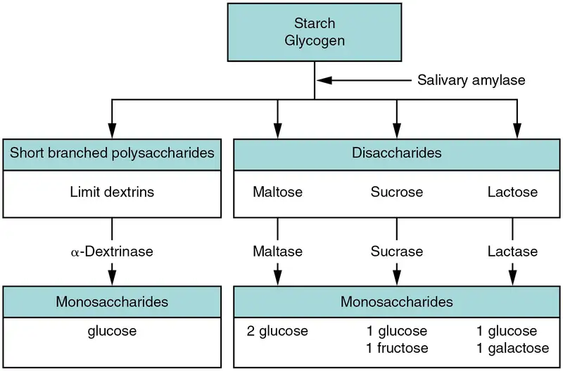
Protein Digestion¶
Proteins are polymers composed of amino acids linked by peptide bonds to form long chains. Digestion reduces them to their constituent amino acids. You usually consume about 15 to 20 percent of your total calorie intake as protein.
The digestion of protein starts in the stomach, where HCl and pepsin break proteins into smaller polypeptides, which then travel to the small intestine (Figure 23.30). Chemical digestion in the small intestine is continued by pancreatic enzymes, including chymotrypsin and trypsin, each of which act on specific bonds in amino acid sequences. At the same time, the cells of the brush border secrete enzymes such as aminopeptidase and dipeptidase, which further break down peptide chains. This results in molecules small enough to enter the bloodstream (Figure 23.31).
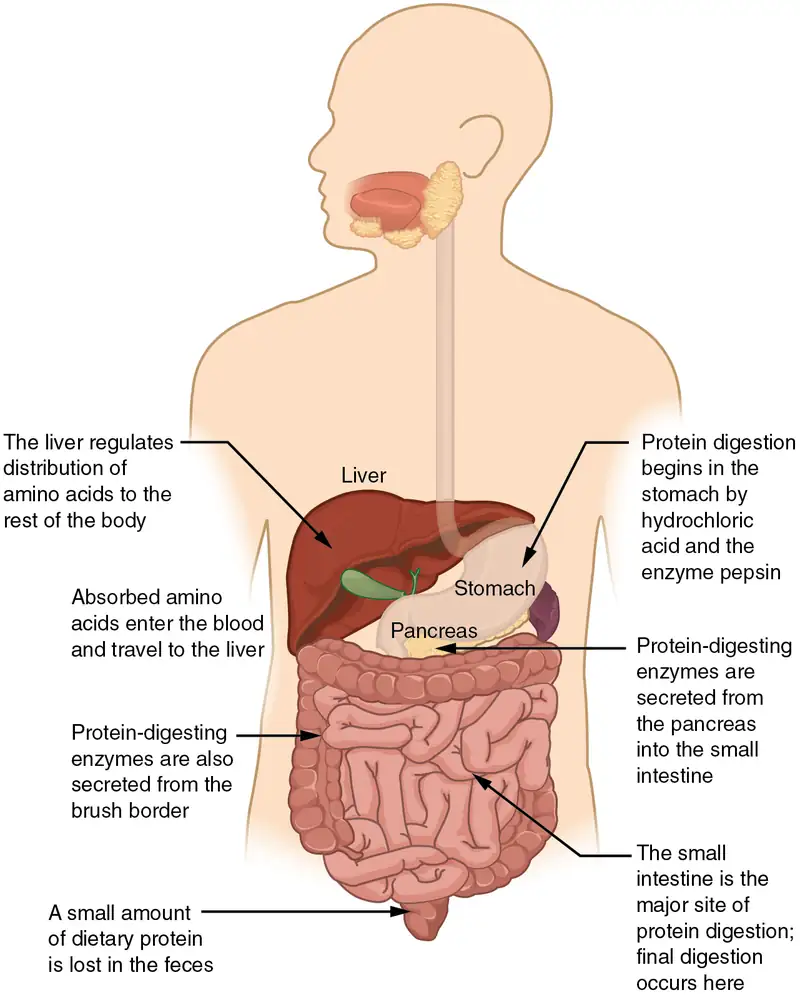
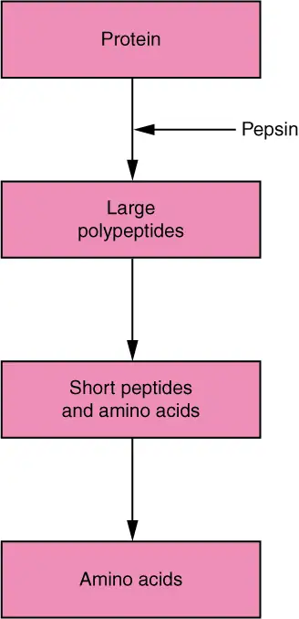
Lipid Digestion¶
A healthy diet limits lipid intake to 35 percent of total calorie intake. The most common dietary lipids are triglycerides, which are made up of a glycerol molecule bound to three fatty acid chains. Small amounts of dietary cholesterol and phospholipids are also consumed.
The three lipases responsible for lipid digestion are lingual lipase, gastric lipase, and pancreatic lipase. However, because the pancreas is the only consequential source of lipase, virtually all lipid digestion occurs in the small intestine. Pancreatic lipase breaks down each triglyceride into two free fatty acids and a monoglyceride. The fatty acids include both short-chain (less than 10 to 12 carbons) and long-chain fatty acids.
Nucleic Acid Digestion¶
The nucleic acids DNA and RNA are found in most of the foods you eat. Two types of pancreatic nuclease are responsible for their digestion: deoxyribonuclease, which digests DNA, and ribonuclease, which digests RNA. The nucleotides produced by this digestion are further broken down by two intestinal brush border enzymes (nucleosidase and phosphatase) into pentoses, phosphates, and nitrogenous bases, which can be absorbed through the alimentary canal wall. The large food molecules that must be broken down into subunits are summarized Table 23.9
Table 23.9
| Absorbable Food Substances | |
|---|---|
| Source | Substance |
| Carbohydrates | Monosaccharides: glucose, galactose, and fructose |
| Proteins | Single amino acids, dipeptides, and tripeptides |
| Triglycerides | Monoacylglycerides, glycerol, and free fatty acids |
| Nucleic acids | Pentose sugars, phosphates, and nitrogenous bases |
Absorption¶
The mechanical and digestive processes have one goal: to convert food into molecules small enough to be absorbed by the epithelial cells of the intestinal villi. The absorptive capacity of the alimentary canal is almost endless. Each day, the alimentary canal processes up to 10 liters of food, liquids, and GI secretions, yet less than one liter enters the large intestine. Almost all ingested food, 80 percent of electrolytes, and 90 percent of water are absorbed in the small intestine. Although the entire small intestine is involved in the absorption of water and lipids, most absorption of carbohydrates and proteins occurs in the jejunum. Notably, bile salts and vitamin B12 are absorbed in the terminal ileum. By the time chyme passes from the ileum into the large intestine, it is essentially indigestible food residue (mainly plant fibers like cellulose), some water, and millions of bacteria (Figure 23.32).
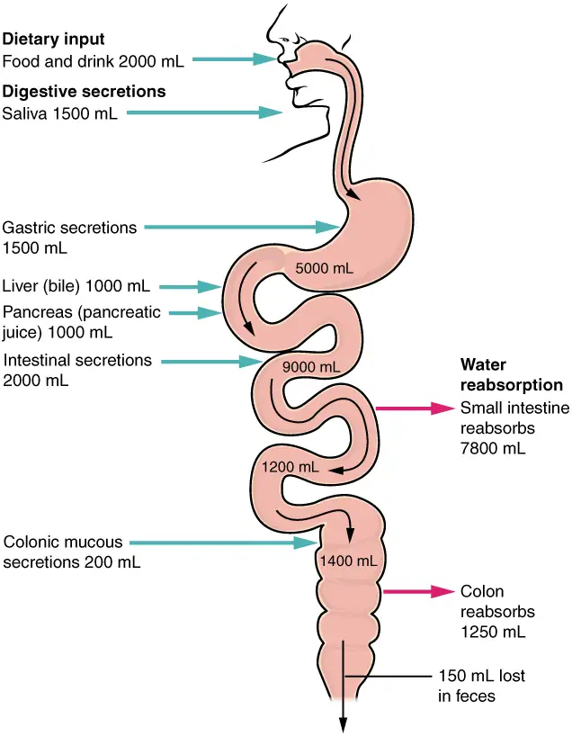
Absorption can occur through five mechanisms: (1) active transport, (2) passive diffusion, (3) facilitated diffusion, (4) co-transport (or secondary active transport), and (5) endocytosis. As you will recall from Chapter 3, active transport refers to the movement of a substance across a cell membrane going from an area of lower concentration to an area of higher concentration (up the concentration gradient). In this type of transport, proteins within the cell membrane act as “pumps,” using cellular energy (ATP) to move the substance. Passive diffusion refers to the movement of substances from an area of higher concentration to an area of lower concentration, while facilitated diffusion refers to the movement of substances from an area of higher to an area of lower concentration using a carrier protein in the cell membrane. Co-transport uses the movement of one molecule through the membrane from higher to lower concentration to power the movement of another from lower to higher. Finally, endocytosis is a transportation process in which the cell membrane engulfs material. It requires energy, generally in the form of ATP.
Because the cell’s plasma membrane is made up of hydrophobic phospholipids, water-soluble nutrients must use transport molecules embedded in the membrane to enter cells. Moreover, substances cannot pass between the epithelial cells of the intestinal mucosa because these cells are bound together by tight junctions. Thus, substances can only enter blood capillaries by passing through the apical surfaces of epithelial cells and into the interstitial fluid. Water-soluble nutrients enter the capillary blood in the villi and travel to the liver via the hepatic portal vein.
In contrast to the water-soluble nutrients, lipid-soluble nutrients can diffuse through the plasma membrane. Once inside the cell, they are packaged for transport via the base of the cell and then enter the lacteals of the villi to be transported by lymphatic vessels to the systemic circulation via the thoracic duct. The absorption of most nutrients through the mucosa of the intestinal villi requires active transport fueled by ATP. The routes of absorption for each food category are summarized in Table 23.10.
Table 23.10
| Absorption in the Alimentary Canal | ||||
|---|---|---|---|---|
| Food | Breakdown products | Absorption mechanism | Entry to bloodstream | Destination |
| Carbohydrates | Glucose | Co-transport with sodium ions | Capillary blood in villi | Liver via hepatic portal vein |
| Carbohydrates | Galactose | Co-transport with sodium ions | Capillary blood in villi | Liver via hepatic portal vein |
| Carbohydrates | Fructose | Facilitated diffusion | Capillary blood in villi | Liver via hepatic portal vein |
| Protein | Amino acids | Co-transport with sodium ions | Capillary blood in villi | Liver via hepatic portal vein |
| Lipids | Long-chain fatty acids | Diffusion into intestinal cells, where they are combined with proteins to create chylomicrons | Lacteals of villi | Systemic circulation via lymph entering thoracic duct |
| Lipids | Monoacylglycerides | Diffusion into intestinal cells, where they are combined with proteins to create chylomicrons | Lacteals of villi | Systemic circulation via lymph entering thoracic duct |
| Lipids | Short-chain fatty acids | Simple diffusion | Capillary blood in villi | Liver via hepatic portal vein |
| Lipids | Glycerol | Simple diffusion | Capillary blood in villi | Liver via hepatic portal vein |
| Nucleic Acids | Nucleic acid digestion products | Active transport via membrane carriers | Capillary blood in villi | Liver via hepatic portal vein |
Carbohydrate Absorption¶
All carbohydrates are absorbed in the form of monosaccharides. The small intestine is highly efficient at this, absorbing monosaccharides at an estimated rate of 120 grams per hour. All normally digested dietary carbohydrates are absorbed; indigestible fibers are eliminated in the feces. The monosaccharides glucose and galactose are transported into the epithelial cells by common protein carriers via secondary active transport (that is, co-transport with sodium ions). The monosaccharides leave these cells via facilitated diffusion and enter the capillaries through intercellular clefts. The monosaccharide fructose (which is in fruit) is absorbed and transported by facilitated diffusion alone. The monosaccharides combine with the transport proteins immediately after the disaccharides are broken down.
Protein Absorption¶
Active transport mechanisms, primarily in the duodenum and jejunum, absorb most proteins as their breakdown products, amino acids. Almost all (95 to 98 percent) protein is digested and absorbed in the small intestine. The type of carrier that transports an amino acid varies. Most carriers are linked to the active transport of sodium. Short chains of two amino acids (dipeptides) or three amino acids (tripeptides) are also transported actively. However, after they enter the absorptive epithelial cells, they are broken down into their amino acids before leaving the cell and entering the capillary blood via diffusion.
Lipid Absorption¶
About 95 percent of lipids are absorbed in the small intestine. Bile salts not only speed up lipid digestion, they are also essential to the absorption of the end products of lipid digestion. Short-chain fatty acids are relatively water soluble and can enter the absorptive cells (enterocytes) directly. The small size of short-chain fatty acids enables them to be absorbed by enterocytes via simple diffusion, and then take the same path as monosaccharides and amino acids into the blood capillary of a villus.
The large and hydrophobic long-chain fatty acids and monoacylglycerides are not so easily suspended in the watery intestinal chyme. However, bile salts and lecithin resolve this issue by enclosing them in a micelle, which is a tiny sphere with polar (hydrophilic) ends facing the watery environment and hydrophobic tails turned to the interior, creating a receptive environment for the long-chain fatty acids. The core also includes cholesterol and fat-soluble vitamins. Without micelles, lipids would sit on the surface of chyme and never come in contact with the absorptive surfaces of the epithelial cells. Micelles can easily squeeze between microvilli and get very near the luminal cell surface. At this point, lipid substances exit the micelle and are absorbed via simple diffusion.
The free fatty acids and monoacylglycerides that enter the epithelial cells are reincorporated into triglycerides. The triglycerides are mixed with phospholipids and cholesterol, and surrounded with a protein coat. This new complex, called a chylomicron, is a water-soluble lipoprotein. After being processed by the Golgi apparatus, chylomicrons are released from the cell (Figure 23.33). Too big to pass through the basement membranes of blood capillaries, chylomicrons instead enter the large pores of lacteals. The lacteals come together to form the lymphatic vessels. The chylomicrons are transported in the lymphatic vessels and empty through the thoracic duct into the subclavian vein of the circulatory system. Once in the bloodstream, the enzyme lipoprotein lipase breaks down the triglycerides of the chylomicrons into free fatty acids and glycerol. These breakdown products then pass through capillary walls to be used for energy by cells or stored in adipose tissue as fat. Liver cells combine the remaining chylomicron remnants with proteins, forming lipoproteins that transport cholesterol in the blood.
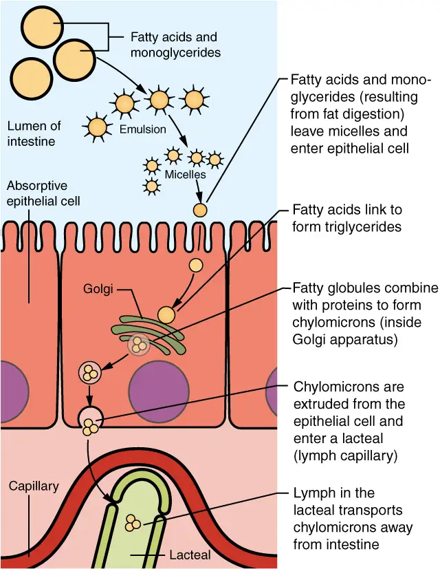
Nucleic Acid Absorption¶
The products of nucleic acid digestion—pentose sugars, nitrogenous bases, and phosphate ions—are transported by carriers across the villus epithelium via active transport. These products then enter the bloodstream.
Mineral Absorption¶
The electrolytes absorbed by the small intestine are from both GI secretions and ingested foods. Since electrolytes dissociate into ions in water, most are absorbed via active transport throughout the entire small intestine. During absorption, co-transport mechanisms result in the accumulation of sodium ions inside the cells, whereas anti-port mechanisms reduce the potassium ion concentration inside the cells. To restore the sodium-potassium gradient across the cell membrane, a sodium-potassium pump requiring ATP pumps sodium out and potassium in.
In general, all minerals that enter the intestine are absorbed, whether you need them or not. Iron and calcium are exceptions; they are absorbed in the duodenum in amounts that meet the body’s current requirements, as follows:
Iron—The ionic iron needed for the production of hemoglobin is absorbed into mucosal cells via active transport. Once inside mucosal cells, ionic iron binds to the protein ferritin, creating iron-ferritin complexes that store iron until needed. When the body has enough iron, most of the stored iron is lost when worn-out epithelial cells slough off. When the body needs iron because, for example, it is lost during acute or chronic bleeding, there is increased uptake of iron from the intestine and accelerated release of iron into the bloodstream. Since females experience significant iron loss during menstruation, they have around four times as many iron transport proteins in their intestinal epithelial cells as do males.
Calcium—Blood levels of ionic calcium determine the absorption of dietary calcium. When blood levels of ionic calcium drop, parathyroid hormone (PTH) secreted by the parathyroid glands stimulates the release of calcium ions from bone matrices and increases the reabsorption of calcium by the kidneys. PTH also upregulates the activation of vitamin D in the kidney, which then facilitates intestinal calcium ion absorption.
Vitamin Absorption¶
The small intestine absorbs the vitamins that occur naturally in food and supplements. Fat-soluble vitamins (A, D, E, and K) are absorbed along with dietary lipids in micelles via simple diffusion. This is why you are advised to eat some fatty foods when you take fat-soluble vitamin supplements. Most water-soluble vitamins (including most B vitamins and vitamin C) also are absorbed by simple diffusion. An exception is vitamin B12, which is a very large molecule. Intrinsic factor secreted in the stomach binds to vitamin B12, preventing its digestion and creating a complex that binds to mucosal receptors in the terminal ileum, where it is taken up by endocytosis.
Water Absorption¶
Each day, about nine liters of fluid enter the small intestine. About 2.3 liters are ingested in foods and beverages, and the rest is from GI secretions. About 90 percent of this water is absorbed in the small intestine. Water absorption is driven by the concentration gradient of the water: The concentration of water is higher in chyme than it is in epithelial cells. Thus, water moves down its concentration gradient from the chyme into cells. As noted earlier, much of the remaining water is then absorbed in the colon.
Chapter Review¶
Key Terms¶
- absorption
- passage of digested products from the intestinal lumen through mucosal cells and into the bloodstream or lacteals
- accessory digestive organ
- includes teeth, tongue, salivary glands, gallbladder, liver, and pancreas
- accessory duct
- (also, duct of Santorini) duct that runs from the pancreas into the duodenum
- acinus
- cluster of glandular epithelial cells in the pancreas that secretes pancreatic juice in the pancreas
- alimentary canal
- continuous muscular digestive tube that extends from the mouth to the anus
- aminopeptidase
- brush border enzyme that acts on proteins
- anal canal
- final segment of the large intestine
- anal column
- long fold of mucosa in the anal canal
- anal sinus
- recess between anal columns
- appendix
- (vermiform appendix) coiled tube attached to the cecum
- ascending colon
- first region of the colon
- bacterial flora
- bacteria in the large intestine
- bile
- alkaline solution produced by the liver and important for the emulsification of lipids
- bile canaliculus
- small duct between hepatocytes that collects bile
- bilirubin
- main bile pigment, which is responsible for the brown color of feces
- body
- mid-portion of the stomach
- bolus
- mass of chewed food
- brush border
- fuzzy appearance of the small intestinal mucosa created by microvilli
- cardia
- (also, cardiac region) part of the stomach surrounding the cardiac orifice (esophageal hiatus)
- cecum
- pouch forming the beginning of the large intestine
- cementum
- bone-like tissue covering the root of a tooth
- central vein
- vein that receives blood from hepatic sinusoids
- cephalic phase
- (also, reflex phase) initial phase of gastric secretion that occurs before food enters the stomach
- chemical digestion
- enzymatic breakdown of food
- chief cell
- gastric gland cell that secretes pepsinogen
- chylomicron
- large lipid-transport compound made up of triglycerides, phospholipids, cholesterol, and proteins
- chyme
- soupy liquid created when food is mixed with digestive juices
- circular fold
- (also, plica circulare) deep fold in the mucosa and submucosa of the small intestine
- colon
- part of the large intestine between the cecum and the rectum
- common bile duct
- structure formed by the union of the common hepatic duct and the gallbladder’s cystic duct
- common hepatic duct
- duct formed by the merger of the two hepatic ducts
- crown
- portion of tooth visible superior to the gum line
- cuspid
- (also, canine) pointed tooth used for tearing and shredding food
- cystic duct
- duct through which bile drains and enters the gallbladder
- deciduous tooth
- one of 20 “baby teeth”
- defecation
- elimination of undigested substances from the body in the form of feces
- deglutition
- three-stage process of swallowing
- dens
- tooth
- dentin
- bone-like tissue immediately deep to the enamel of the crown or cementum of the root of a tooth
- dentition
- set of teeth
- deoxyribonuclease
- pancreatic enzyme that digests DNA
- descending colon
- part of the colon between the transverse colon and the sigmoid colon
- dipeptidase
- brush border enzyme that acts on proteins
- duodenal gland
- (also, Brunner’s gland) mucous-secreting gland in the duodenal submucosa
- duodenum
- first part of the small intestine, which starts at the pyloric sphincter and ends at the jejunum
- enamel
- covering of the dentin of the crown of a tooth
- enteroendocrine cell
- gastric gland cell that releases hormones
- enterohepatic circulation
- recycling mechanism that conserves bile salts
- enteropeptidase
- intestinal brush-border enzyme that activates trypsinogen to trypsin
- epiploic appendage
- small sac of fat-filled visceral peritoneum attached to teniae coli
- esophagus
- muscular tube that runs from the pharynx to the stomach
- external anal sphincter
- voluntary skeletal muscle sphincter in the anal canal
- fauces
- opening between the oral cavity and the oropharynx
- feces
- semisolid waste product of digestion
- flatus
- gas in the intestine
- fundus
- dome-shaped region of the stomach above and to the left of the cardia
- G cell
- gastrin-secreting enteroendocrine cell
- gallbladder
- accessory digestive organ that stores and concentrates bile
- gastric emptying
- process by which mixing waves gradually cause the release of chyme into the duodenum
- gastric gland
- gland in the stomach mucosal epithelium that produces gastric juice
- gastric phase
- phase of gastric secretion that begins when food enters the stomach
- gastric pit
- narrow channel formed by the epithelial lining of the stomach mucosa
- gastrin
- peptide hormone that stimulates secretion of hydrochloric acid and gut motility
- gastrocolic reflex
- propulsive movement in the colon activated by the presence of food in the stomach
- gastroileal reflex
- long reflex that increases the strength of segmentation in the ileum
- gingiva
- gum
- haustral contraction
- slow segmentation in the large intestine
- haustrum
- small pouch in the colon created by tonic contractions of teniae coli
- hepatic artery
- artery that supplies oxygenated blood to the liver
- hepatic lobule
- hexagonal-shaped structure composed of hepatocytes that radiate outward from a central vein
- hepatic portal vein
- vein that supplies deoxygenated nutrient-rich blood to the liver
- hepatic sinusoid
- blood capillaries between rows of hepatocytes that receive blood from the hepatic portal vein and the branches of the hepatic artery
- hepatic vein
- vein that drains into the inferior vena cava
- hepatocytes
- major functional cells of the liver
- hepatopancreatic ampulla
- (also, ampulla of Vater) bulb-like point in the wall of the duodenum where the bile duct and main pancreatic duct unite
- hepatopancreatic sphincter
- (also, sphincter of Oddi) sphincter regulating the flow of bile and pancreatic juice into the duodenum
- hydrochloric acid (HCl)
- digestive acid secreted by parietal cells in the stomach
- ileocecal sphincter
- sphincter located where the small intestine joins with the large intestine
- ileum
- end of the small intestine between the jejunum and the large intestine
- incisor
- midline, chisel-shaped tooth used for cutting into food
- ingestion
- taking food into the GI tract through the mouth
- internal anal sphincter
- involuntary smooth muscle sphincter in the anal canal
- intestinal gland
- (also, crypt of Lieberkühn) gland in the small intestinal mucosa that secretes intestinal juice
- intestinal juice
- mixture of water and mucus that helps absorb nutrients from chyme
- intestinal phase
- phase of gastric secretion that begins when chyme enters the intestine
- intrinsic factor
- glycoprotein required for vitamin B12 absorption in the small intestine
- jejunum
- middle part of the small intestine between the duodenum and the ileum
- labial frenulum
- midline mucous membrane fold that attaches the inner surface of the lips to the gums
- labium
- lip
- lactase
- brush border enzyme that breaks down lactose into glucose and galactose
- lacteal
- lymphatic capillary in the villi
- large intestine
- terminal portion of the alimentary canal
- laryngopharynx
- part of the pharynx that functions in respiration and digestion
- left colic flexure
- (also, splenic flexure) point where the transverse colon curves below the inferior end of the spleen
- lingual frenulum
- mucous membrane fold that attaches the bottom of the tongue to the floor of the mouth
- lingual lipase
- digestive enzyme from glands in the tongue that acts on triglycerides
- lipoprotein lipase
- enzyme that breaks down triglycerides in chylomicrons into fatty acids and monoglycerides
- liver
- largest gland in the body whose main digestive function is the production of bile
- lower esophageal sphincter
- smooth muscle sphincter that regulates food movement from the esophagus to the stomach
- main pancreatic duct
- (also, duct of Wirsung) duct through which pancreatic juice drains from the pancreas
- major duodenal papilla
- point at which the hepatopancreatic ampulla opens into the duodenum
- maltase
- brush border enzyme that breaks down maltose and maltotriose into two and three molecules of glucose, respectively
- mass movement
- long, slow, peristaltic wave in the large intestine
- mastication
- chewing
- mechanical digestion
- chewing, mixing, and segmentation that prepares food for chemical digestion
- mesoappendix
- mesentery of the appendix
- micelle
- tiny lipid-transport compound composed of bile salts and phospholipids with a fatty acid and monoacylglyceride core
- microvillus
- small projection of the plasma membrane of the absorptive cells of the small intestinal mucosa
- migrating motility complex
- form of peristalsis in the small intestine
- mixing wave
- unique type of peristalsis that occurs in the stomach
- molar
- tooth used for crushing and grinding food
- motilin
- hormone that initiates migrating motility complexes
- motility
- movement of food through the GI tract
- mucosa
- innermost lining of the alimentary canal
- mucosal barrier
- protective barrier that prevents gastric juice from destroying the stomach itself
- mucous neck cell
- gastric gland cell that secretes a uniquely acidic mucus
- muscularis
- muscle (skeletal or smooth) layer of the alimentary canal wall
- myenteric plexus
- (plexus of Auerbach) major nerve supply to alimentary canal wall; controls motility
- nucleosidase
- brush border enzyme that digests nucleotides
- oral cavity
- (also, buccal cavity) mouth
- oral vestibule
- part of the mouth bounded externally by the cheeks and lips, and internally by the gums and teeth
- oropharynx
- part of the pharynx continuous with the oral cavity that functions in respiration and digestion
- palatoglossal arch
- muscular fold that extends from the lateral side of the soft palate to the base of the tongue
- palatopharyngeal arch
- muscular fold that extends from the lateral side of the soft palate to the side of the pharynx
- pancreas
- accessory digestive organ that secretes pancreatic juice
- pancreatic amylase
- enzyme secreted by the pancreas that completes the chemical digestion of carbohydrates in the small intestine
- pancreatic juice
- secretion of the pancreas containing digestive enzymes and bicarbonate
- pancreatic lipase
- enzyme secreted by the pancreas that participates in lipid digestion
- pancreatic nuclease
- enzyme secreted by the pancreas that participates in nucleic acid digestion
- parietal cell
- gastric gland cell that secretes hydrochloric acid and intrinsic factor
- parotid gland
- one of a pair of major salivary glands located inferior and anterior to the ears
- pectinate line
- horizontal line that runs like a ring, perpendicular to the inferior margins of the anal sinuses
- pepsinogen
- inactive form of pepsin
- peristalsis
- muscular contractions and relaxations that propel food through the GI tract
- permanent tooth
- one of 32 adult teeth
- pharynx
- throat
- phosphatase
- brush border enzyme that digests nucleotides
- porta hepatis
- “gateway to the liver” where the hepatic artery and hepatic portal vein enter the liver
- portal triad
- bile duct, hepatic artery branch, and hepatic portal vein branch
- premolar
- (also, bicuspid) transitional tooth used for mastication, crushing, and grinding food
- propulsion
- voluntary process of swallowing and the involuntary process of peristalsis that moves food through the digestive tract
- pulp cavity
- deepest portion of a tooth, containing nerve endings and blood vessels
- pyloric antrum
- wider, more superior part of the pylorus
- pyloric canal
- narrow, more inferior part of the pylorus
- pyloric sphincter
- sphincter that controls stomach emptying
- pylorus
- lower, funnel-shaped part of the stomach that is continuous with the duodenum
- rectal valve
- one of three transverse folds in the rectum where feces is separated from flatus
- rectum
- part of the large intestine between the sigmoid colon and anal canal
- reticuloendothelial cell
- (also, Kupffer cell) phagocyte in hepatic sinusoids that filters out material from venous blood from the alimentary canal
- retroperitoneal
- located posterior to the peritoneum
- ribonuclease
- pancreatic enzyme that digests RNA
- right colic flexure
- (also, hepatic flexure) point, at the inferior surface of the liver, where the ascending colon turns abruptly to the left
- root
- portion of a tooth embedded in the alveolar processes beneath the gum line
- ruga
- fold of alimentary canal mucosa and submucosa in the empty stomach and other organs
- saccharolytic fermentation
- anaerobic decomposition of carbohydrates
- saliva
- aqueous solution of proteins and ions secreted into the mouth by the salivary glands
- salivary amylase
- digestive enzyme in saliva that acts on starch
- salivary gland
- an exocrine gland that secretes a digestive fluid called saliva
- salivation
- secretion of saliva
- segmentation
- alternating contractions and relaxations of non-adjacent segments of the intestine that move food forward and backward, breaking it apart and mixing it with digestive juices
- serosa
- outermost layer of the alimentary canal wall present in regions within the abdominal cavity
- sigmoid colon
- end portion of the colon, which terminates at the rectum
- small intestine
- section of the alimentary canal where most digestion and absorption occurs
- soft palate
- posterior region of the bottom portion of the nasal cavity that consists of skeletal muscle
- stomach
- alimentary canal organ that contributes to chemical and mechanical digestion of food from the esophagus before releasing it, as chyme, to the small intestine
- sublingual gland
- one of a pair of major salivary glands located beneath the tongue
- submandibular gland
- one of a pair of major salivary glands located in the floor of the mouth
- submucosa
- layer of dense connective tissue in the alimentary canal wall that binds the overlying mucosa to the underlying muscularis
- submucosal plexus
- (plexus of Meissner) nerve supply that regulates activity of glands and smooth muscle
- sucrase
- brush border enzyme that breaks down sucrose into glucose and fructose
- tenia coli
- one of three smooth muscle bands that make up the longitudinal muscle layer of the muscularis in all of the large intestine except the terminal end
- tongue
- accessory digestive organ of the mouth, the bulk of which is composed of skeletal muscle
- transverse colon
- part of the colon between the ascending colon and the descending colon
- upper esophageal sphincter
- skeletal muscle sphincter that regulates food movement from the pharynx to the esophagus
- Valsalva’s maneuver
- voluntary contraction of the diaphragm and abdominal wall muscles and closing of the glottis, which increases intra-abdominal pressure and facilitates defecation
- villus
- projection of the mucosa of the small intestine
- voluntary phase
- initial phase of deglutition, in which the bolus moves from the mouth to the oropharynx
- α-dextrin
- breakdown product of starch
- α-dextrinase
- brush border enzyme that acts on α-dextrins
Chapter Review¶
23.1 Overview of the Digestive System¶
The digestive system includes the organs of the alimentary canal and accessory structures. The alimentary canal forms a continuous tube that is open to the outside environment at both ends. The organs of the alimentary canal are the mouth, pharynx, esophagus, stomach, small intestine, and large intestine. The accessory digestive structures include the teeth, tongue, salivary glands, liver, pancreas, and gallbladder. The wall of the alimentary canal is composed of four basic tissue layers: mucosa, submucosa, muscularis, and serosa. The enteric nervous system provides intrinsic innervation, and the autonomic nervous system provides extrinsic innervation.
23.2 Digestive System Processes and Regulation¶
The digestive system ingests and digests food, absorbs released nutrients, and excretes food components that are indigestible. The six activities involved in this process are ingestion, motility, mechanical digestion, chemical digestion, absorption, and defecation. These processes are regulated by neural and hormonal mechanisms.
23.3 The Mouth, Pharynx, and Esophagus¶
In the mouth, the tongue and the teeth begin mechanical digestion, and saliva begins chemical digestion. The pharynx, which plays roles in breathing and vocalization as well as digestion, runs from the nasal and oral cavities superiorly to the esophagus inferiorly (for digestion) and to the larynx anteriorly (for respiration). During deglutition (swallowing), the soft palate rises to close off the nasopharynx, the larynx elevates, and the epiglottis folds over the glottis. The esophagus includes an upper esophageal sphincter made of skeletal muscle, which regulates the movement of food from the pharynx to the esophagus. It also has a lower esophageal sphincter, made of smooth muscle, which controls the passage of food from the esophagus to the stomach. Cells in the esophageal wall secrete mucus that eases the passage of the food bolus.
23.4 The Stomach¶
The stomach participates in all digestive activities except ingestion and defecation. It vigorously churns food. It secretes gastric juices that break down food and absorbs certain drugs, including aspirin and some alcohol. The stomach begins the digestion of protein and continues the digestion of carbohydrates and fats. It stores food as an acidic liquid called chyme, and releases it gradually into the small intestine through the pyloric sphincter.
23.5 The Small and Large Intestines¶
The three main regions of the small intestine are the duodenum, the jejunum, and the ileum. The small intestine is where digestion is completed and virtually all absorption occurs. These two activities are facilitated by structural adaptations that increase the mucosal surface area by 600-fold, including circular folds, villi, and microvilli. There are around 200 million microvilli per square millimeter of small intestine, which contain brush border enzymes that complete the digestion of carbohydrates and proteins. Combined with pancreatic juice, intestinal juice provides the liquid medium needed to further digest and absorb substances from chyme. The small intestine is also the site of unique mechanical digestive movements. Segmentation moves the chyme back and forth, increasing mixing and opportunities for absorption. Migrating motility complexes propel the residual chyme toward the large intestine.
The main regions of the large intestine are the cecum, the colon, and the rectum. The large intestine absorbs water and forms feces, and is responsible for defecation. Bacterial flora break down additional carbohydrate residue, and synthesize certain vitamins. The mucosa of the large intestinal wall is generously endowed with goblet cells, which secrete mucus that eases the passage of feces. The entry of feces into the rectum activates the defecation reflex.
23.6 Accessory Organs in Digestion: The Liver, Pancreas, and Gallbladder¶
Chemical digestion in the small intestine cannot occur without the help of the liver and pancreas. The liver produces bile and delivers it to the common hepatic duct. Bile contains bile salts and phospholipids, which emulsify large lipid globules into tiny lipid droplets, a necessary step in lipid digestion and absorption. The gallbladder stores and concentrates bile, releasing it when it is needed by the small intestine.
The pancreas produces the enzyme- and bicarbonate-rich pancreatic juice and delivers it to the small intestine through ducts. Pancreatic juice buffers the acidic gastric juice in chyme, inactivates pepsin from the stomach, and enables the optimal functioning of digestive enzymes in the small intestine.
23.7 Chemical Digestion and Absorption: A Closer Look¶
The small intestine is the site of most chemical digestion and almost all absorption. Chemical digestion breaks large food molecules down into their chemical building blocks, which can then be absorbed through the intestinal wall and into the general circulation. Intestinal brush border enzymes and pancreatic enzymes are responsible for the majority of chemical digestion. The breakdown of fat also requires bile.
Most nutrients are absorbed by transport mechanisms at the apical surface of enterocytes. Exceptions include lipids, fat-soluble vitamins, and most water-soluble vitamins. With the help of bile salts and lecithin, the dietary fats are emulsified to form micelles, which can carry the fat particles to the surface of the enterocytes. There, the micelles release their fats to diffuse across the cell membrane. The fats are then reassembled into triglycerides and mixed with other lipids and proteins into chylomicrons that can pass into lacteals. Other absorbed monomers travel from blood capillaries in the villus to the hepatic portal vein and then to the liver.
Interactive Link Questions¶
23.1 Overview of the Digestive System¶
1. By clicking on this link, you can watch a short video of what happens to the food you eat as it passes from your mouth to your intestine. Along the way, note how the food changes consistency and form. How does this change in consistency facilitate your gaining nutrients from food?
Answer
Answers may vary.
23.2 Digestive System Processes and Regulation¶
2. Visit this site for an overview of digestion of food in different regions of the digestive tract. Note the route of non-fat nutrients from the small intestine to their release as nutrients to the body.
Answer
Answers may vary.
23.3 The Mouth, Pharynx, and Esophagus¶
3. Watch this animation to see how swallowing is a complex process that involves the nervous system to coordinate the actions of upper respiratory and digestive activities. During which stage of swallowing is there a risk of food entering respiratory pathways and how is this risk blocked?
Answer
Answers may vary.
23.4 The Stomach¶
4. Watch this animation that depicts the structure of the stomach and how this structure functions in the initiation of protein digestion. This view of the stomach shows the characteristic rugae. What is the function of these rugae?
Answer
Answers may vary.
23.5 The Small and Large Intestines¶
5. Watch this animation that depicts the structure of the small intestine, and, in particular, the villi. Epithelial cells continue the digestion and absorption of nutrients and transport these nutrients to the lymphatic and circulatory systems. In the small intestine, the products of food digestion are absorbed by different structures in the villi. Which structure absorbs and transports fats?
Answer
Answers may vary.
6. By watching this animation, you will see that for the various food groups—proteins, fats, and carbohydrates—digestion and absorption occur mainly in the small intestines. Of the three major food classes (carbohydrates, fats, and proteins), which breakdown products are absorbed into lymphatic vessels called lacteals?
Answer
Answers may vary.
23.6 Accessory Organs in Digestion: The Liver, Pancreas, and Gallbladder¶
7. Watch this video to see the structure of the liver and how this structure supports the functions of the liver, including the processing of nutrients, toxins, and wastes. At rest, about 1500 mL of blood per minute flow through the liver. What percentage of this blood flow comes from the hepatic portal system?
Answer
Answers may vary.
Review Questions¶
23.1 Overview of the Digestive System¶
8. Which of these organs is not considered an accessory digestive structure?
- mouth
- salivary glands
- pancreas
- liver
Answer
A
9. Which of the following organs is supported by a layer of adventitia rather than serosa?
- esophagus
- stomach
- small intestine
- large intestine
Answer
A
10. Which of the following membranes covers the stomach?
- falciform ligament
- mesocolon
- parietal peritoneum
- visceral peritoneum
Answer
D
23.2 Digestive System Processes and Regulation¶
11. Which of these processes occurs in the mouth?
- ingestion
- mechanical digestion
- chemical digestion
- all of the above
Answer
D
12. Which of these processes occurs throughout most of the alimentary canal?
- ingestion
- propulsion
- segmentation
- absorption
Answer
B
13. Which of the following stimuli activates sensors in the walls of digestive organs?
- breakdown products of digestion
- distension
- pH of chyme
- all of the above
Answer
D
14. Which of these statements about reflexes in the GI tract is false?
- Short reflexes are provoked by nerves near the GI tract.
- Short reflexes are mediated by the enteric nervous system.
- Food that distends the stomach initiates long reflexes.
- Long reflexes can be provoked by stimuli originating outside the GI tract.
Answer
C
23.3 The Mouth, Pharynx, and Esophagus¶
15. Which of these ingredients in saliva is responsible for activating salivary amylase?
- mucus
- phosphate ions
- chloride ions
- urea
Answer
C
16. Which of these statements about the pharynx is true?
- It extends from the nasal and oral cavities superiorly to the esophagus anteriorly.
- The oropharynx is continuous superiorly with the nasopharynx.
- The nasopharynx is involved in digestion.
- The laryngopharynx is composed partially of cartilage.
Answer
B
17. Which structure is located where the esophagus penetrates the diaphragm?
- esophageal hiatus
- cardiac orifice
- upper esophageal sphincter
- lower esophageal sphincter
Answer
A
18. Which phase of deglutition involves contraction of the longitudinal muscle layer of the muscularis?
- voluntary phase
- buccal phase
- pharyngeal phase
- esophageal phase
Answer
D
23.4 The Stomach¶
19. Which of these cells secrete hormones?
- parietal cells
- mucous neck cells
- enteroendocrine cells
- chief cells
Answer
C
20. Where does the majority of chemical digestion in the stomach occur?
- fundus and body
- cardia and fundus
- body and pylorus
- body
Answer
A
21. During gastric emptying, chyme is released into the duodenum through the ________.
- esophageal hiatus
- pyloric antrum
- pyloric canal
- pyloric sphincter
Answer
D
22. Parietal cells secrete ________.
- gastrin
- hydrochloric acid
- pepsin
- pepsinogen
Answer
B
23.5 The Small and Large Intestines¶
23. In which part of the alimentary canal does most digestion occur?
- stomach
- proximal small intestine
- distal small intestine
- ascending colon
Answer
B
24. Which of these is most associated with villi?
- haustra
- lacteals
- bacterial flora
- intestinal glands
Answer
B
25. What is the role of the small intestine’s MALT?
- secreting mucus
- buffering acidic chyme
- activating pepsin
- preventing bacteria from entering the bloodstream
Answer
D
26. Which part of the large intestine attaches to the appendix?
- cecum
- ascending colon
- transverse colon
- descending colon
Answer
A
23.6 Accessory Organs in Digestion: The Liver, Pancreas, and Gallbladder¶
27. Which of these statements about bile is true?
- About 500 mL is secreted daily.
- Its main function is the denaturation of proteins.
- It is synthesized in the gallbladder.
- Bile salts are recycled.
Answer
D
28. Pancreatic juice ________.
- deactivates bile.
- is secreted by pancreatic islet cells.
- buffers chyme.
- is released into the cystic duct.
Answer
C
23.7 Chemical Digestion and Absorption: A Closer Look¶
29. Where does the chemical digestion of starch begin?
- mouth
- esophagus
- stomach
- small intestine
Answer
A
30. Which of these is involved in the chemical digestion of protein?
- pancreatic amylase
- trypsin
- sucrase
- pancreatic nuclease
Answer
B
31. Where are most fat-digesting enzymes produced?
- small intestine
- gallbladder
- liver
- pancreas
Answer
D
32. Which of these nutrients is absorbed mainly in the duodenum?
- glucose
- iron
- sodium
- water
Answer
B
Critical Thinking Questions¶
23.1 Overview of the Digestive System¶
33. Explain how the enteric nervous system supports the digestive system. What might occur that could result in the autonomic nervous system having a negative impact on digestion?
Answer
The enteric nervous system helps regulate alimentary canal motility and the secretion of digestive juices, thus facilitating digestion. If a person becomes overly anxious, sympathetic innervation of the alimentary canal is stimulated, which can result in a slowing of digestive activity.
34. What layer of the alimentary canal tissue is capable of helping to protect the body against disease, and through what mechanism?
Answer
The lamina propria of the mucosa contains lymphoid tissue that makes up the MALT and responds to pathogens encountered in the alimentary canal.
23.2 Digestive System Processes and Regulation¶
35. Offer a theory to explain why segmentation occurs and peristalsis slows in the small intestine.
Answer
The majority of digestion and absorption occurs in the small intestine. By slowing the transit of chyme, segmentation and a reduced rate of peristalsis allow time for these processes to occur.
36. It has been several hours since you last ate. Walking past a bakery, you catch a whiff of freshly baked bread. What type of reflex is triggered, and what is the result?
Answer
The smell of food initiates long reflexes, which result in the secretion of digestive juices.
23.3 The Mouth, Pharynx, and Esophagus¶
37. The composition of saliva varies from gland to gland. Discuss how saliva produced by the parotid gland differs in action from saliva produced by the sublingual gland.
Answer
Parotid gland saliva is watery with little mucus but a lot of amylase, which allows it to mix freely with food during mastication and begin the digestion of carbohydrates. In contrast, sublingual gland saliva has a lot of mucus with the least amount of amylase of all the salivary glands. The high mucus content serves to lubricate the food for swallowing.
38. During a hockey game, the puck hits a player in the mouth, knocking out all eight of their most anterior teeth. Which teeth did the player lose and how does this loss affect food ingestion?
Answer
The incisors. Since these teeth are used for tearing off pieces of food during ingestion, the player will need to ingest foods that have already been cut into bite-sized pieces until the broken teeth are replaced.
39. What prevents swallowed food from entering the airways?
Answer
Usually when food is swallowed, involuntary muscle contractions cause the soft palate to rise and close off the nasopharynx. The larynx also is pulled up, and the epiglottis folds over the glottis. These actions block off the air passages.
40. Explain the mechanism responsible for gastroesophageal reflux.
Answer
If the lower esophageal sphincter does not close completely, the stomach’s acidic contents can back up into the esophagus, a phenomenon known as GERD.
41. Describe the three processes involved in the esophageal phase of deglutition.
Answer
Peristalsis moves the bolus down the esophagus and toward the stomach. Esophageal glands secrete mucus that lubricates the bolus and reduces friction. When the bolus nears the stomach, the lower esophageal sphincter relaxes, allowing the bolus to pass into the stomach.
23.4 The Stomach¶
42. Explain how the stomach is protected from self-digestion and why this is necessary.
Answer
The mucosal barrier protects the stomach from self-digestion. It includes a thick coating of bicarbonate-rich mucus; the mucus is physically protective, and bicarbonate neutralizes gastric acid. Epithelial cells meet at tight junctions, which block gastric juice from penetrating the underlying tissue layers, and stem cells quickly replace sloughed off epithelial mucosal cells.
43. Describe unique anatomical features that enable the stomach to perform digestive functions.
Answer
The stomach has an additional inner oblique smooth muscle layer that helps the muscularis churn and mix food. The epithelium includes gastric glands that secrete gastric fluid. The gastric fluid consists mainly of mucous, HCl, and the enzyme pepsin released as pepsinogen.
23.5 The Small and Large Intestines¶
44. Explain how nutrients absorbed in the small intestine pass into the general circulation.
Answer
Nutrients from the breakdown of carbohydrates and proteins are absorbed through a capillary bed in the villi of the small intestine. Lipid breakdown products are absorbed into a lacteal in the villi, and transported via the lymphatic system to the bloodstream.
45. Why is it important that chyme from the stomach is delivered to the small intestine slowly and in small amounts?
Answer
If large quantities of chyme were forced into the small intestine, it would result in osmotic water loss from the blood into the intestinal lumen that could cause potentially life-threatening low blood volume and erosion of the duodenum.
46. Describe three of the differences between the walls of the large and small intestines.
Answer
The mucosa of the small intestine includes circular folds, villi, and microvilli. The wall of the large intestine has a thick mucosal layer, and deeper and more abundant mucus-secreting glands that facilitate the smooth passage of feces. There are three features that are unique to the large intestine: teniae coli, haustra, and epiploic appendages.
23.6 Accessory Organs in Digestion: The Liver, Pancreas, and Gallbladder¶
47. Why does the pancreas secrete some enzymes in their inactive forms, and where are these enzymes activated?
Answer
The pancreas secretes protein-digesting enzymes in their inactive forms. If secreted in their active forms, they would self-digest the pancreas. These enzymes are activated in the duodenum.
48. Describe the location of hepatocytes in the liver and how this arrangement enhances their function.
Answer
The hepatocytes are the main cell type of the liver. They process, store, and release nutrients into the blood. Radiating out from the central vein, they are tightly packed around the hepatic sinusoids, allowing the hepatocytes easy access to the blood flowing through the sinusoids.
23.7 Chemical Digestion and Absorption: A Closer Look¶
49. Explain the role of bile salts and lecithin in the emulsification of lipids (fats).
Answer
Bile salts and lecithin can emulsify large lipid globules because they are amphipathic; they have a nonpolar (hydrophobic) region that attaches to the large fat molecules as well as a polar (hydrophilic) region that interacts with the watery chime in the intestine.
50. How is vitamin B12 absorbed?
Answer
Intrinsic factor secreted in the stomach binds to the large B12 compound, creating a combination that can bind to mucosal receptors in the ileum.
References¶
References
23.3 The Mouth, Pharynx, and Esophagus
van Loon FPL, Holmes SJ, Sirotkin B, Williams W, Cochi S, Hadler S, Lindegren ML. Morbidity and Mortality Weekly Report: Mumps surveillance -- United States, 1988–1993 [Internet]. Atlanta, GA: Center for Disease Control; [cited 2013 Apr 3]. Available from: http://www.cdc.gov/mmwr/preview/mmwrhtml/00038546.htm.
23.5 The Small and Large Intestines
American Cancer Society (US). Cancer facts and figures: colorectal cancer: 2011–2013 [Internet]. c2013 [cited 2013 Apr 3]. Available from: http://www.cancer.org/Research/CancerFactsFigures/ColorectalCancerFactsFigures/colorectal-cancer-facts-figures-2011-2013-page.
The Nutrition Source. Fiber and colon cancer: following the scientific trail [Internet]. Boston (MA): Harvard School of Public Health; c2012 [cited 2013 Apr 3]. Available from: https://www.hsph.harvard.edu/nutritionsource/carbohydrates/fiber/.
Centers for Disease Control and Prevention (US). Morbidity and mortality weekly report: notifiable diseases and mortality tables [Internet]. Atlanta (GA); [cited 2013 Apr 3]. Available from: http://www.cdc.gov/mmwr/preview/mmwrhtml/mm6101md.htm?s_cid=mm6101md_w.
Adapted from Anatomy and Physiology 2e by OpenStax, licensed under CC BY 4.0. Access the original for free at openstax.org. Changes: converted to the web reading format of The Open Book Project.